<!doctype html>
<html lang="en">
<head>
  <meta charset="utf-8">
  <meta name="viewport" content="width=device-width, initial-scale=1">
  <title>arxiv digest — 2026-10-07</title>
  <style>
:root {
  --bg: #ffffff;
  --fg: #1f2328;
  --muted: #59636e;
  --border: #d0d7de;
  --card: #f6f8fa;
  --link: #0969da;
}
body {
  max-width: 980px;
  margin: 0 auto;
  padding: 2rem 1rem 5rem;
  font-family: -apple-system, BlinkMacSystemFont, "Segoe UI", Helvetica, Arial, sans-serif;
  line-height: 1.55;
  color: var(--fg);
  background: var(--bg);
}
a { color: var(--link); }
img { max-width: 100%; height: auto; }
pre, code { background: var(--card); border-radius: 6px; }
pre { padding: 1rem; overflow-x: auto; }
blockquote { border-left: 4px solid var(--border); padding-left: 1rem; color: var(--muted); }
details { margin: 0.6rem 0; }
summary { cursor: pointer; font-weight: 600; }
.paper-figures-scroll {
  display: flex;
  gap: 1rem;
  overflow-x: auto;
  overscroll-behavior-x: contain;
  padding: 0.75rem 0.25rem 1rem;
  margin: 1rem 0 1.25rem;
  border-top: 1px solid var(--border);
  border-bottom: 1px solid var(--border);
  scroll-snap-type: x proximity;
}
.paper-figure-card {
  flex: 0 0 min(260px, 72vw);
  scroll-snap-align: start;
  background: var(--card);
  border: 1px solid var(--border);
  border-radius: 12px;
  padding: 0.55rem;
}
.paper-figure-card img {
  display: block;
  width: 100%;
  max-height: 240px;
  object-fit: contain;
  background: white;
  border-radius: 8px;
}
.paper-figure-caption {
  display: block;
  margin-top: 0.5rem;
  color: var(--muted);
  font-size: 0.85rem;
}
.figure-strip-hint {
  color: var(--muted);
  font-size: 0.9rem;
  margin-bottom: -0.3rem;
}
</style>
  <!-- MathJax: renders $...$ inline math and $$...$$ display math, plus
       \(...\) and \[...\]. Loaded from the official CDN; works offline
       once cached. Configured to skip code/pre blocks so arxiv IDs that
       look like dollar amounts don't get mangled. -->
  <script>
    window.MathJax = {
      tex: {
        inlineMath: [['$', '$'], ['\\(', '\\)']],
        displayMath: [['$$', '$$'], ['\\[', '\\]']],
        processEscapes: true,
        processEnvironments: true
      },
      options: {
        skipHtmlTags: ['script', 'noscript', 'style', 'textarea', 'pre', 'code'],
        ignoreHtmlClass: 'tex2jax_ignore',
        processHtmlClass: 'tex2jax_process'
      }
    };
  </script>
  <script id="MathJax-script" async
    src="https://cdn.jsdelivr.net/npm/mathjax@3/es5/tex-chtml.js"></script>
</head>
<body>
<header style="background-color: #333; color: white; padding: 15px; margin-bottom: 20px;">
  <h1 style="margin: 0; font-size: 24px;">
    <a href="https://ochelpan.github.io/arXiv_clean/" style="color: white; text-decoration: none;">Main</a>
  </h1>
</header>

<h1>Daily arXiv Report</h1>

<hr>
<p>
<a href="index.html">← Index</a>
 · <a href="papers_15.html">← Previous</a> · <a href="papers_17.html">Next →</a>
</p>
<hr>

<h2>Papers 301–320</h2>
<p><a id="paper-2610.05905"></a></p>
<h3 id="intrinsic-spin-orbit-coupling-in-graphene-stacks"><a href="http://arxiv.org/abs/2610.05905v1">Intrinsic spin-orbit coupling in graphene stacks</a></h3>
<p><strong>Authors:</strong> Guillermo Parra-Martinez, Alejandro Jimeno-Pozo, Ady Stern, Jose Angel Silva-Guillén, Francisco Guinea<br>
<strong>Type:</strong> theory · <strong>Category:</strong> strongly correlated electrons · <strong>PDF:</strong> <a href="https://arxiv.org/pdf/2610.05905v1">https://arxiv.org/pdf/2610.05905v1</a><br>
<strong>Analysis basis:</strong> full PDF text, analyzed in chunks
<strong>Topic relevance:</strong> <code>analog quantum simulation</code> <strong>2/5</strong> · <code>Keldysh / 2PI / non-Gaussian methods</code> <strong>1/5</strong></p>
<div class="figure-strip-hint">↔ Scroll figures horizontally</div>
<div class="paper-figures-scroll">
<figure class="paper-figure-card">
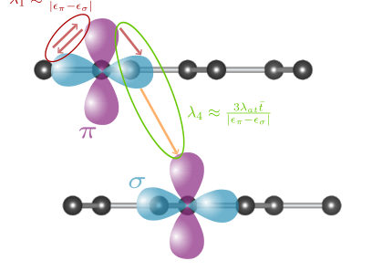
<figcaption class="paper-figure-caption"><b>Fig 1.</b> Figure 1. Sketch of second order perturbation processes which lead to λ1 (red ellipse, Kane-Mele term), and λ4 (green ellipse, spin-flip + layer hopping) in eq. (1).</figcaption>
</figure>
<figure class="paper-figure-card">
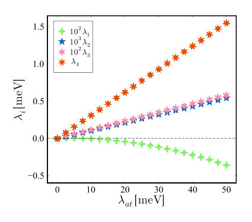
<figcaption class="paper-figure-caption"><b>Fig 2.</b> Figure 2. Scaling of the different effective pz −pz spin orbit couplings terms λ1, λ2, λ3, λ4 [see HSOC in eq. (1)], as function of the value of the intra-atomic interaction, λat.The calculation is carried out with the tight binding parameters shown in Table [S1] of the SM [51], except for the parameter λat.</figcaption>
</figure>
<figure class="paper-figure-card">
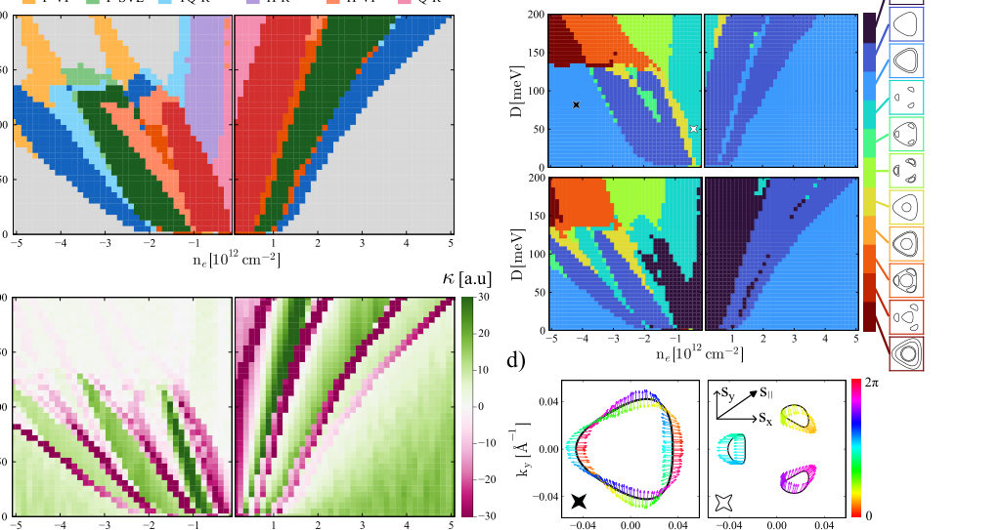
<figcaption class="paper-figure-caption"><b>Fig 3.</b> Figure 3. (a) Ground-state phase diagram as a function of external displacement field D and carrier density ne, for holes (left) and electrons (right); Color labels indicate the different phases detailed in Table I. (b) Interaction inverse-compressibility κ ∼dµ/dn. (c) Valley-resolved Fermi surface topology index for the majority (top) and minority (bottom) valleys (see Sections S6to S8 of the SM [51] for definitions). (d) Spin textures over the K-valley Fermi contours for TQ-SVL (left) and Q-R (right); s∥is depicted by arrows whose color encodes the azimuthal angle. A winding phase emerges with opposed ±1 helicity for each intra-valley doped band.</figcaption>
</figure>
<figure class="paper-figure-card">
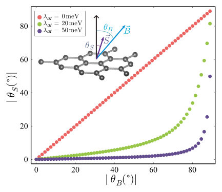
<figcaption class="paper-figure-caption"><b>Fig 4.</b> Figure 4. Tilting of a spin under an applied magnetic field, B = 0.015 T which is rotated from the out of plane orientation (θB = 0) to the parallel orientation (θB = 90), calculated for different values of the intraatomic spin-orbit coupling, λat, see [21]. Inset: Sketch of the directions of the magnetic field and spin with respect to the last layer of graphene.</figcaption>
</figure>
</div>

<p><strong>Summary.</strong> This work calculates the intrinsic spin-orbit coupling in stacked graphene layers, demonstrating that this effect is crucial and cannot be ignored as in single-layer graphene. By analyzing the resulting Hamiltonian using mean-field theory, the authors map out new correlated phases and propose experimental diagnostics based on magnetization to confirm the importance of interlayer SOC.</p>
<p><strong>Why it may be interesting.</strong> The detailed analysis of spin-valley locking and the emergence of correlated phases due to SOC provides rich theoretical models relevant to topological quantum materials and strongly interacting electron systems.</p>
<details>
<summary>Detailed structure</summary>
<p><strong>Main problem.</strong> To determine the physical consequences of intrinsic spin-orbit coupling (SOC) in multilayer graphene stacks, arguing that SOC effects are significant in these systems, unlike the single-layer case.</p>
<p><strong>Main result.</strong> The intrinsic SOC term ($\lambda_4$) is the dominant effect in multilayer graphene, modifying the phase diagram and leading to a distinct, measurable density-dependence of magnetization in weak magnetic fields.</p>
<p><strong>Method.</strong> The study employs tight-binding models, mean-field Hartree-Fock theory, and continuum approximations to analyze the effective low-energy Hamiltonian.</p>
<p><strong>Model / system.</strong> The system is graphene stacks, specifically rhombohedral multilayer graphene (RMG) and $    ext{R}4 ext{G}$. The analysis incorporates the atomic SOC and derives an effective Hamiltonian containing terms like the Kane-Mele term ($\lambda_1$) and the crucial interlayer spin-flip term ($\lambda_4$).</p>
<p><strong>Key observables.</strong> Phase diagrams, Fermi surface topologies (quantified by Euler characteristic $\chi_\xi$ and index $\Lambda$), and the density-dependence of magnetization ($\langle s_z 
angle$).</p>
<p><strong>Important parameters / regimes.</strong> SOC strengths ($\lambda_1$ vs. $\lambda_4$), carrier density ($n$), and external magnetic field strength ($B$).</p>
<p><strong>Assumptions / limitations.</strong> The analysis uses a continuum model and neglects effects due to a possible displacement field.</p>
<p><strong>Figures summary.</strong> Figures illustrate the derivation of SOC terms, phase diagrams showing transitions between correlated metallic states, and the topology of the Fermi surface in different regimes.</p>
<p><strong>Paper structure.</strong> The paper progresses from establishing the necessity of including intrinsic SOC in multilayer systems, deriving the effective low-energy Hamiltonian, applying Hartree-Fock theory to map out the phase diagram, and finally using magnetization diagnostics to distinguish between different SOC mechanisms.</p>
</details>
<details>
<summary>Abstract</summary>
<p>The effect of spin-orbit coupling (SOC) in monolayer graphene has been thoroughly studied in the past. Its impact is commonly disregarded since the electronic structure of graphene is almost unaffected. Consequently, SOC has also been ignored in other graphitic systems. In this work, we calculate the intrinsic SOC in stacks of graphene layers from a model that includes all the valence orbitals of carbon as well as the intra-atomic SOC.The leading spin-orbit term in a graphene multilayer combines a Rashba-like spin-flip process with interlayer hopping. We find that this intrinsic term modifies the phase diagram and Fermi surfaces of finite rhombohedral stacks, and it leads to a distinct density-dependence of the magnetization in weak magnetic fields. This Letter shows that, unlike in the single-layer case, SOC has important consequences in multilayer graphitic systems and it should not be neglected when studying their physical properties.</p>
</details>
<p><sub><a href="#top">↑ back to top</a></sub></p>

<p><a id="paper-2610.04080"></a></p>
<h3 id="studying-the-evolution-of-exchange-and-dipolar-interactions-and-spin-correlation-in-vdw-magnet-crcl3-across-magnetic-phases"><a href="http://arxiv.org/abs/2610.04080v1">Studying the evolution of exchange and dipolar interactions and spin correlation in vdW magnet CrCl3 across magnetic phases</a></h3>
<p><strong>Authors:</strong> Prem B. Karki, Ayodimeji E. Aregbesola, Karishma Prasad, Jonathan Skeels, Avani Inamdar, Pooja Kalal, Jian Wang, Kapildeb Ambal<em><br>
</em><em>Type:</em><em> experiment · </em><em>Category:</em><em> other · </em><em>PDF:</em><em> <a href="https://arxiv.org/pdf/2610.04080v1">https://arxiv.org/pdf/2610.04080v1</a><br>
</em><em>Analysis basis:</em><em> full PDF text, analyzed in chunks
</em><em>Topic relevance:</em><em> <code>analog quantum simulation</code> </em><em>2/5</em><em> · <code>quantum measurements</code> </em><em>1/5</em>*</p>
<div class="figure-strip-hint">↔ Scroll figures horizontally</div>
<div class="paper-figures-scroll">
<figure class="paper-figure-card">
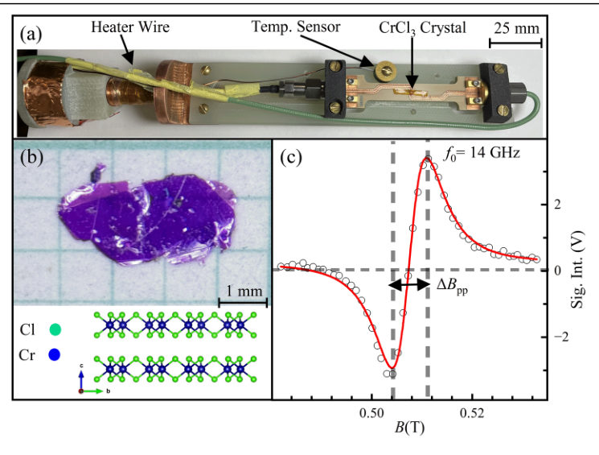
<figcaption class="paper-figure-caption"><b>Fig 1.</b> Figure 1. (a) is the picture probe head used for broadband magnetic resonance experiment. The probe head was placed inside the closed cycle cryostat. (b) is the CrCl3 crystal which is used to cleaved to produce uniform CrCl3 sample. (c) is the representative lock-in detected the magnetic resonance spectrum measured at 14 GHz at room temperature. The red-lines is the Lorentzian fit used to extract the peak-peak linewidth.</figcaption>
</figure>
<figure class="paper-figure-card">
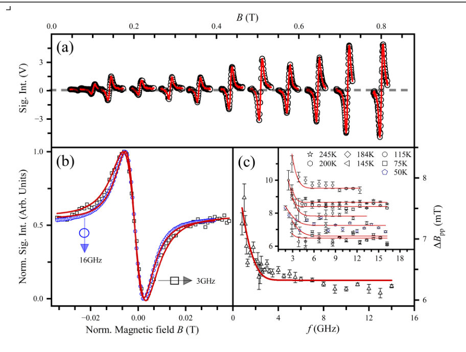
<figcaption class="paper-figure-caption"><b>Fig 2.</b> Figure 2 (a) Broadband magnetic resonance spectra of CrCl₃ measured over the frequency range from 1 to 16 GHz at room temperature. The red curve is the derivative Lorentzian fits used to estimate the resonance linewidth. (b) Representative resonance spectra measured at 3 GHz and 16 GHz overlap to show the broadening at room temperature (c) Peak-to-peak linewidth Δ𝐵𝐵𝑝𝑝𝑝𝑝 as a function of resonance frequency measured at room temperature demonstrating exchange narrowing of the resonance linewidth. The red line is the fit according to the Anderson–Weiss theory of exchange-narrowing. The inset shows resonance linewidth dependence as function of resonance frequency at different temperatures....</figcaption>
</figure>
<figure class="paper-figure-card">
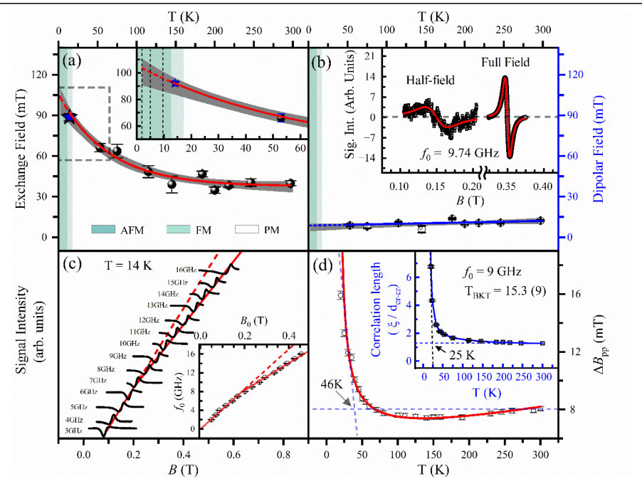
<figcaption class="paper-figure-caption"><b>Fig 3.</b> Figure 3 (a) Temperature dependence of the exchange field (𝐵𝐵𝑒𝑒𝑒𝑒) (solid circles). The red line is an exponential fit. The gray background region shows the 95% confidence interval calculated using residual bootstrap analysis. The star data point shows the exchange field measured at 14 K. The inset shows the zoomed data shown in the dotted box. The sub-figure in (a) shows the extrapolated exchange interaction up to 1 K. The black dashed lines in the sub-figure in (a) indicate the predicted value of the exchange field at 1.5 K, 5 K, and 10 K. (b) Temperature dependence of dipolar field (𝐵𝐵𝑑𝑑) (open circles). The solid blue line is the guide to the eye that has been extrapolated to lower...</figcaption>
</figure>
<figure class="paper-figure-card">
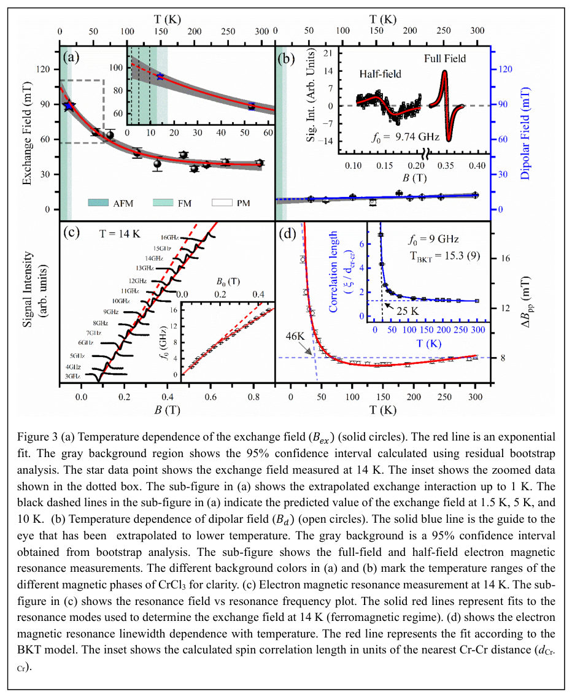
<figcaption class="paper-figure-caption"><b>Fig 4.</b> Figure 3a shows how the exchange interaction evolves as the temperature decreases. The exchange field shows an exponential enhancement at lower temperatures, indicating reduced thermal/phonon-mediated spin fluctuations. We fit the exchange interactions with an exponential fit shown as a red line in Figure 3a.</figcaption>
</figure>
</div>

<p><strong>Summary.</strong> This work uses broadband magnetic resonance spectroscopy on CrCl3 to map the temperature evolution of magnetic interactions. By analyzing linewidth narrowing and resonance shifts, the authors distinguish between temperature-dependent exchange and relatively constant dipolar interactions. The findings confirm robust short-range magnetic correlations in the material, highlighting the technique's sensitivity for quantum magnetism studies.</p>
<p><strong>Why it may be interesting.</strong> The detailed spectroscopic measurements provide quantitative insights into the interplay between short-range magnetic correlations and long-range ordering in a tunable quantum magnetic material, which is crucial for designing spintronic devices.</p>
<details>
<summary>Detailed structure</summary>
<p><strong>Main problem.</strong> The study investigates how exchange and dipole-dipole interactions, along with spin correlations, evolve in the van der Waals magnet CrCl3 across different magnetic phases.</p>
<p><strong>Main result.</strong> The research found that the exchange interaction evolves exponentially upon cooling, while the dipole-dipole interaction remains constant, indicating short-range magnetic ordering even far above the global ordering temperature.</p>
<p><strong>Method.</strong> The primary method involves multifrequency broadband (1-16 GHz) magnetic resonance measurements performed on a single-crystal CrCl3 sample, supplemented by structural characterization.</p>
<p><strong>Model / system.</strong> The physical system is CrCl3, a van der Waals magnet. Analysis utilizes the Anderson-Weiss model to interpret linewidth narrowing and employs the Berezinskii-Kosterlitz-Thouless (BKT) model to analyze temperature-dependent linewidth broadening.</p>
<p><strong>Key observables.</strong> Magnetic resonance linewidth, exchange field ($B_{ex}$), dipolar field ($B_d$), half-field magnetic resonance transition, and the spin correlation length ($\xi$).</p>
<p><strong>Important parameters / regimes.</strong> Temperature range (RT down to 50 K), microwave frequencies (1-16 GHz), and the measured inter-spin distance (2.4(3) A).</p>
<p><strong>Assumptions / limitations.</strong> The analysis relies on the Anderson-Weiss theory for linewidth narrowing and the BKT model for analyzing the temperature dependence of correlations.</p>
<p><strong>Figures summary.</strong> Figures show broadband magnetic resonance spectra across varying temperatures and orientations, illustrating linewidth narrowing due to exchange effects and the temperature dependence of correlation length fitted to the BKT model.</p>
<p><strong>Paper structure.</strong> The paper progresses by first characterizing the system using broadband magnetic resonance, then analyzing the temperature dependence of the exchange and dipole interactions, and finally using the BKT model to quantify the magnetic correlation length divergence near the phase transition.</p>
</details>
<details>
<summary>Abstract</summary>
<p>Understanding quantum interactions in van der Waals magnets are critical to realizing their potential for next-generation magnetic, electronic, and spintronic applications. In this study, we investigated the evolution of exchange and dipole-dipole interactions in van der Waals magnet CrCl3 using multifrequency broadband (1-16 GHz) magnetic resonance on a bulk single-crystal CrCl3 sample. We found that the dipolar-broadened low-field resonance linewidth narrows due to exchange narrowing at higher resonance fields. Our findings show that the exchange interaction evolves exponentially as we lower the sample temperature from room temperature to 50 K. However, we found that the dipole-dipole interaction remains constant in the same temperature range. We have also detected the half-field magnetic resonance transition at room temperature, indicating a robust dipole-dipole interaction among spins. The measured inter-spin distance is 2.4(3) A at room temperature. The evolution of dipole interactions, the observation of half-field magnetic resonance, and the strong exchange interaction indicate short-range ordering/correlation in CrCl3 at temperatures far above the magnetic global ordering temperature. This study also demonstrates the significance and sensitivity of the multifrequency electron spin resonance technique for understanding quantum interactions and magnetic correlations in van der Waals magnetic materials.</p>
</details>
<p><sub><a href="#top">↑ back to top</a></sub></p>

<p><a id="paper-2610.06145"></a></p>
<h3 id="phenomenology-of-reactive-and-dissipative-nutation-in-antiferromagnets"><a href="http://arxiv.org/abs/2610.06145v1">Phenomenology of reactive and dissipative nutation in antiferromagnets</a></h3>
<p><strong>Authors:</strong> Erlend Syljuåsen, Hans Gløckner Giil, Arne Brataas<br>
<strong>Type:</strong> theory · <strong>Category:</strong> other · <strong>PDF:</strong> <a href="https://arxiv.org/pdf/2610.06145v1">https://arxiv.org/pdf/2610.06145v1</a><br>
<strong>Analysis basis:</strong> full PDF text, analyzed in chunks
<strong>Topic relevance:</strong> <code>Keldysh / 2PI / non-Gaussian methods</code> <strong>1/5</strong> · <code>analog quantum simulation</code> <strong>1/5</strong> · <code>correlated / nonlocal dissipation</code> <strong>1/5</strong> · <code>driven-dissipative phase transition</code> <strong>1/5</strong> · <code>methods for driven-dissipative</code> <strong>1/5</strong> · <code>non-equilibrium universality</code> <strong>1/5</strong></p>
<div class="figure-strip-hint">↔ Scroll figures horizontally</div>
<div class="paper-figures-scroll">
<figure class="paper-figure-card">
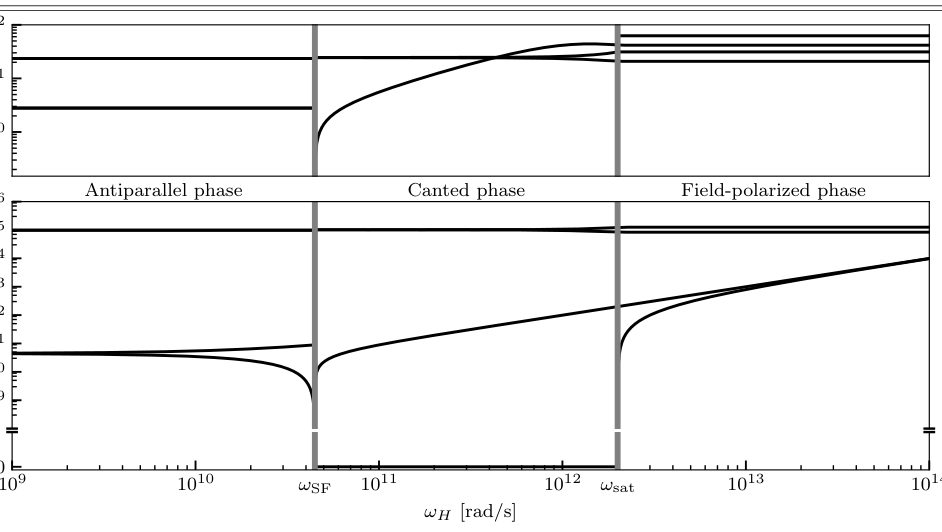
<figcaption class="paper-figure-caption"><b>Fig 1.</b> FIG. 1. Eigenfrequencies across the three equilibrium phases as a function of the static magnetic field, showing the quality factors (upper panel) and the real part of the eigenfrequencies (lower panel). The parameters used are ωE = 1012 rad s−1, ωA = 109 rad s−1, ηd = 10−15 s, αd = 0.01, βd = 0.01, with the cross-sublattice parameters set to px = 0.2pd for p ∈{η, α, β}.</figcaption>
</figure>
</div>

<p><strong>Summary.</strong> This theoretical work develops an advanced model for magnetization dynamics in antiferromagnets by incorporating inertial damping alongside standard damping mechanisms. By analyzing the system across three magnetic phases, the authors derive the full spectrum of eigenfrequencies and propose an experimental protocol to measure the underlying dynamical coefficients.</p>
<p><strong>Why it may be interesting.</strong> The detailed treatment of inertial damping and the derivation of an 'inertial Landau–Lifshitz–Gilbert equation' provides a sophisticated framework for modeling high-frequency dynamics in magnetic materials, relevant to understanding quantum coherence in spin systems.</p>
<details>
<summary>Detailed structure</summary>
<p><strong>Main problem.</strong> The paper formulates and analyzes the equations of motion for uniform magnetization dynamics in multisublattice magnets, focusing on the inclusion of reactive inertia and a novel inertial damping torque.</p>
<p><strong>Main result.</strong> The model successfully derives the dynamical magnetic susceptibilities and eigenfrequencies across three distinct magnetic phases (AP, CA, FP), showing how inertial damping affects the relaxation of nutational modes.</p>
<p><strong>Method.</strong> The methodology involves deriving phenomenological equations of motion, linearizing them around equilibrium points, and calculating the eigenfrequencies by solving the determinant of the resulting dynamical matrix.</p>
<p><strong>Model / system.</strong> The system is a general multisublattice magnet, specifically applied to a two-sublattice uniaxial antiferromagnet. Dynamics are described using Néel ($\mathbf{n}$) and magnetization ($\mathbf{m}$) vectors, constrained by fixed-length conditions.</p>
<p><strong>Key observables.</strong> Dynamical magnetic susceptibilities ($\chi$), resonance frequencies ($\Omega = \omega - i\Gamma$), and linewidths of precessional and nutational modes.</p>
<p><strong>Important parameters / regimes.</strong> Exchange frequency ($\omega_E$), anisotropy frequency ($\omega_A$), Zeeman frequency ($\omega_H$), and various damping coefficients (Gilbert, inertial, etc.).</p>
<p><strong>Assumptions / limitations.</strong> The analysis assumes fixed magnitudes for magnetization vectors and relies on perturbative expansions in damping parameters, particularly in the exchange-dominated regime.</p>
<p><strong>Figures summary.</strong> Figure 1 shows the field dependence of eigenfrequencies and quality factors across the AP, CA, and FP phases, summarizing the results in Table I.</p>
<p><strong>Paper structure.</strong> The paper builds from general equations of motion for multisublattice magnets to specific derivations for the two-sublattice case. It analyzes linear response around three equilibrium phases (AP, CA, FP) by calculating dynamical susceptibilities and solving for eigenfrequencies in different approximations.</p>
</details>
<details>
<summary>Abstract</summary>
<p>We formulate equations of motion for uniform magnetization dynamics in multisublattice magnets, with emphasis on a recently proposed inertial damping torque. We include intra- and intersublattice contributions to Gilbert damping, reactive inertia, and inertial damping. For a two-sublattice uniaxial antiferromagnet in an easy-axis static magnetic field, we derive the dynamical magnetic susceptibilities and approximate eigenfrequencies across all field-dependent equilibrium phases. In particular, we show how inertial damping affects the relaxation of the nutational modes and propose an experimental protocol to determine the dynamical coefficients.</p>
</details>
<p><sub><a href="#top">↑ back to top</a></sub></p>

<p><a id="paper-2610.05090"></a></p>
<h3 id="from-nested-soliton-crystals-to-skyrmion-crystals-in-chiral-magnets"><a href="http://arxiv.org/abs/2610.05090v1">From Nested Soliton Crystals to Skyrmion Crystals in Chiral Magnets</a></h3>
<p><strong>Authors:</strong> Sven Bjarke Gudnason, Muneto Nitta<br>
<strong>Type:</strong> theory · <strong>Category:</strong> statistical mechanics · <strong>PDF:</strong> <a href="https://arxiv.org/pdf/2610.05090v1">https://arxiv.org/pdf/2610.05090v1</a><br>
<strong>Analysis basis:</strong> full PDF text, analyzed in chunks
<strong>Topic relevance:</strong> <code>Frenkel-Kontorova</code> <strong>1/5</strong> · <code>analog quantum simulation</code> <strong>1/5</strong> · <code>driven-dissipative phase transition</code> <strong>1/5</strong> · <code>non-equilibrium universality</code> <strong>1/5</strong></p>
<div class="figure-strip-hint">↔ Scroll figures horizontally</div>
<div class="paper-figures-scroll">
<figure class="paper-figure-card">
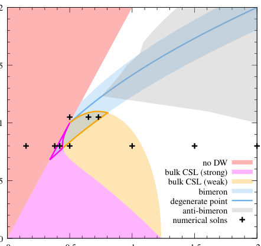
<figcaption class="paper-figure-caption"><b>Fig 1.</b> FIG. 1. Phase diagram in K-B parameter space. (a) The red region (K &lt; 1</figcaption>
</figure>
<figure class="paper-figure-card">
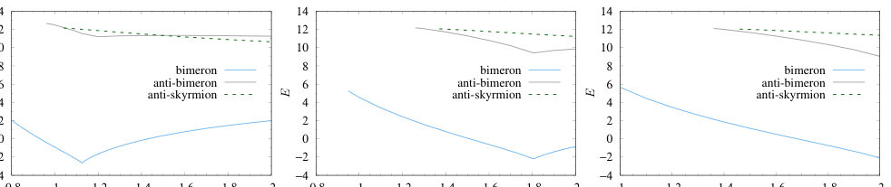
<figcaption class="paper-figure-caption"><b>Fig 2.</b> FIG. 2. Bimeron and anti-bimeron energies at fixed slices of B in the phase diagram (Fig. 1) as functions of K, measured relative to the DW’s energy. The figures also show the anti-skyrmion energies, but relative to the anti-DW’s energy as they live on the anti-DW. In panel (a), the bimeron and anti-skyrmion’s energies are degenerate. Negative bimeron energies make it the ground state, whereas the positive energy states are excited states of the DW. The colors of the curves match the soliton type in Fig. 1.</figcaption>
</figure>
<figure class="paper-figure-card">
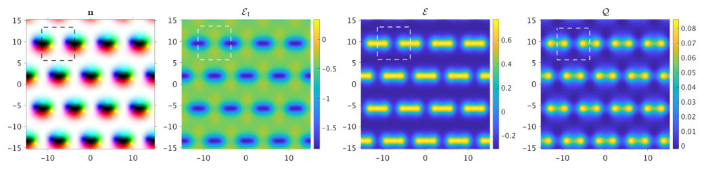
<figcaption class="paper-figure-caption"><b>Fig 3.</b> FIG. 3. CSL on CSL phase (strong condition): K = 0.42, B = 0.8. The four panels display the magnetization vector n, the DMI energy density E1, the total energy density E and finally the topological charge density Q. The coloring scheme of the magnetization vector: n = e3 is white, n = −e3 is black, n = e1 is red, n = e2 is light green, n = −e1 is cyan and n = −e2 is violet. The energy of the solution in this figure is minimized with respect to the dimensions in both the x- and the y-direction subject to periodic boundary conditions. A single bimeron is marked with a dashed line in all panels.</figcaption>
</figure>
<figure class="paper-figure-card">
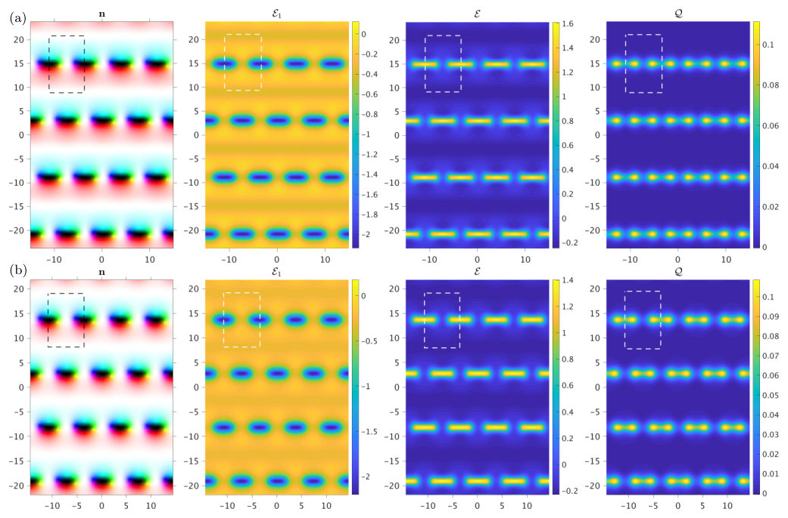
<figcaption class="paper-figure-caption"><b>Fig 4.</b> FIG. 4. CSL on CSL phase (weak condition): (a) K = 0.73 and (b) K = 0.65, B = 1.05 for both. The energies of the solutions in this figure are minimized with respect to the dimensions in both the x- and the y-direction subject to periodic boundary conditions. A single bimeron is marked with a dashed line in all panels. For details of the four columns of panels, see the caption of Fig. 3.</figcaption>
</figure>
<figure class="paper-figure-card">
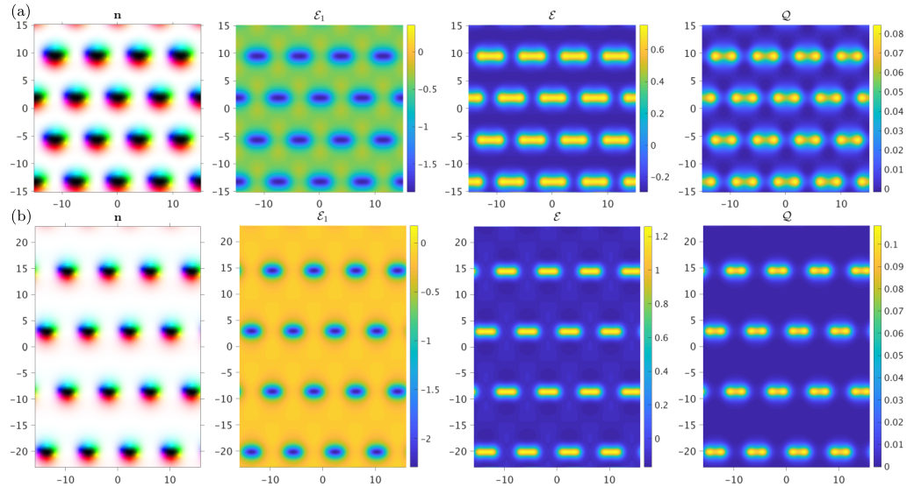
<figcaption class="paper-figure-caption"><b>Fig 5.</b> FIG. 5. Skyrmion lattice phase (stretched hexahonal lattice): (a) K = 0.38, B = 0.8, and (b) K = 0.5, B = 1.05. The energies of the solutions in this figure are minimized with respect to the dimensions in both the x- and the y-direction subject to periodic boundary conditions. For details of the four panels, see the caption of Fig. 3.</figcaption>
</figure>
</div>

<p><strong>Summary.</strong> This paper exhaustively maps the phase diagram of a chiral magnetic model incorporating Dzyaloshinskii-Moriya interaction and external fields. The key finding is that the transition between nested soliton crystal and skyrmion crystal phases is a smooth crossover. The work provides detailed theoretical insights into the stability and interaction of various topological magnetic textures.</p>
<p><strong>Why it may be interesting.</strong> The study of continuous crossovers between ordered magnetic phases, especially those involving topological defects like skyrmions, provides rich theoretical models relevant to understanding phase transitions in quantum materials.</p>
<details>
<summary>Detailed structure</summary>
<p><strong>Main problem.</strong> The study investigates the phase diagram of a chiral magnetic model to understand the transition between different soliton crystal phases.</p>
<p><strong>Main result.</strong> The research finds that the transition from a chiral soliton lattice hosted on a chiral soliton lattice (CSL on a CSL) to the skyrmion crystal lattice (SkX) occurs via a smooth crossover, not a sharp phase transition.</p>
<p><strong>Method.</strong> The authors performed an exhaustive study by mapping out the phase diagram of the model across its parameter space.</p>
<p><strong>Model / system.</strong> The system is a chiral magnet described by an energy functional involving a Dzyaloshinskii-Moriya interaction, in-plane anisotropy, and an out-of-plane Zeeman field. The dynamics are governed by an equation of motion derived from this energy functional.</p>
<p><strong>Key observables.</strong> Topological charge (Skyrmion number), ground state energy, and the existence/stability of various soliton structures (skyrmions, bimerons, domain walls).</p>
<p><strong>Important parameters / regimes.</strong> The dimensionless parameters K (in-plane anisotropy) and B (out-of-plane Zeeman field) define the phase diagram.</p>
<p><strong>Assumptions / limitations.</strong> The analysis relies on mapping the parameter space and treating the transition between phases as a smooth crossover rather than a first-order phase transition.</p>
<p><strong>Figures summary.</strong> The notes mention a phase diagram (Fig. 1(b)) illustrating the crossover between different magnetic phases.</p>
<p><strong>Paper structure.</strong> The paper systematically analyzes the energy functional, derives the equations of motion for various topological structures (DWs, skyrmions), maps the resulting phase diagram, and identifies the nature of the transitions between the observed ground states.</p>
</details>
<details>
<summary>Abstract</summary>
<p>We perform an exhaustive study of the parameter space of the chiral magnetic model with a Dzyaloshinskii-Moriya interaction, an in-plane anisotropy term and an out-of-plane Zeeman magnetic field. We map out the phase diagram for the model and find a chiral soliton lattice hosted on a chiral soliton lattice as the ground state in a particular corner of the phase diagram. There is a smooth crossover, as opposed to a phase transition, to the skyrmion crystal lattice phase. Finally, we also discover excited composite soliton states such as an anti-skyrmion coexisting with a bimeron or an anti-bimeron.</p>
</details>
<p><sub><a href="#top">↑ back to top</a></sub></p>

<p><a id="paper-2610.04760"></a></p>
<h3 id="site-specific-orbital-symmetry-breaking-in-epitaxial-graphene-on-silicon-carbide"><a href="http://arxiv.org/abs/2610.04760v1">Site-Specific Orbital Symmetry Breaking in Epitaxial Graphene on Silicon Carbide</a></h3>
<p><strong>Authors:</strong> Vinod K. Paidi, Yves Joly, Alex Taekyung Lee, Guillaume Radtke, Vlado K. Lazarov, Demie Kepaptsoglou, Quentin M. Ramasse, Matthieu Bugnet<br>
<strong>Type:</strong> both · <strong>Category:</strong> other · <strong>PDF:</strong> <a href="https://arxiv.org/pdf/2610.04760v1">https://arxiv.org/pdf/2610.04760v1</a><br>
<strong>Analysis basis:</strong> full PDF text, analyzed in chunks
<strong>Topic relevance:</strong> <code>Keldysh / 2PI / non-Gaussian methods</code> <strong>1/5</strong> · <code>analog quantum simulation</code> <strong>1/5</strong> · <code>quantum measurements</code> <strong>1/5</strong></p>
<div class="figure-strip-hint">↔ Scroll figures horizontally</div>
<div class="paper-figures-scroll">
<figure class="paper-figure-card">
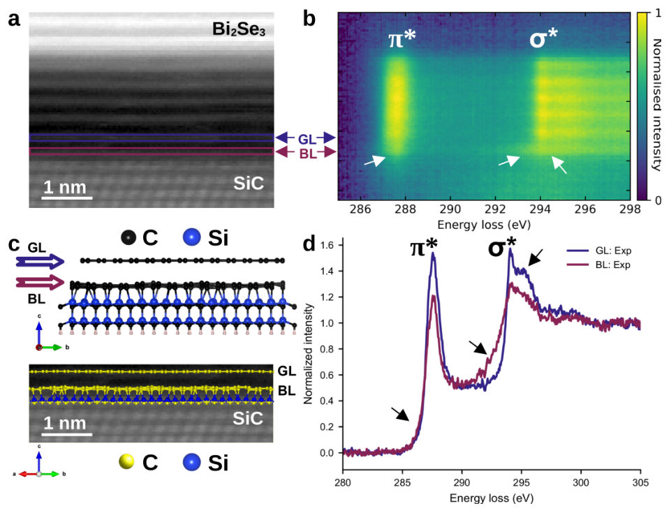
<figcaption class="paper-figure-caption"><b>Fig 1.</b> Figure 1: Graphene/SiC specimen and layer-by-layer core-loss electron energy loss spectroscopy. (a) High-resolution HAADF-STEM cross-sectional view of the graphene/SiC specimen. (b) HAADF-STEM image of the graphene/SiC interface acquired as part of the spectrum image. C K-edge ELNES projected along the layer-stacking direction, in which the ELNES of each pixel is summed over the corresponding horizontal line of the datacube. (c) Representative unit cell of the (6 √</figcaption>
</figure>
<figure class="paper-figure-card">
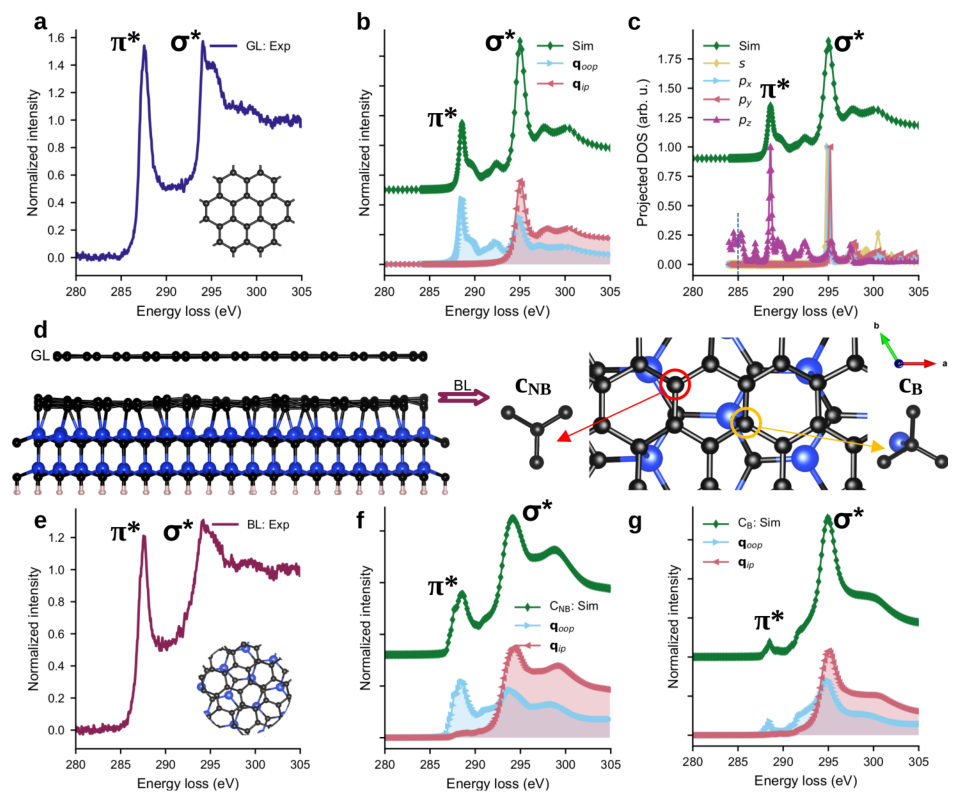
<figcaption class="paper-figure-caption"><b>Fig 2.</b> Figure 2: C K-edge ELNES and Simulations of GL and BL on SiC. (a) Experimen- tal C K-edge ELNES spectrum of the graphene layer (GL). (b) Calculated in-plane (qip) and out-of-plane (qoop) spectral components (shaded), together with their orientationally weighted sum. (c) Calculated partial density of states (DOS) of GL, with the degenerate px and py contributions shaded for clarity and shown alongside the calculated spectrum. Dashed line denotes the Fermi level (EF). An energy threshold (Ecut) was applied to select transitions into unoccupied states above EF (see Computational Details). (d) Schematic of the GL/SiC interface distinguishing non-bonded (CNB) and bonded (CB) carbon atoms (black...</figcaption>
</figure>
<figure class="paper-figure-card">
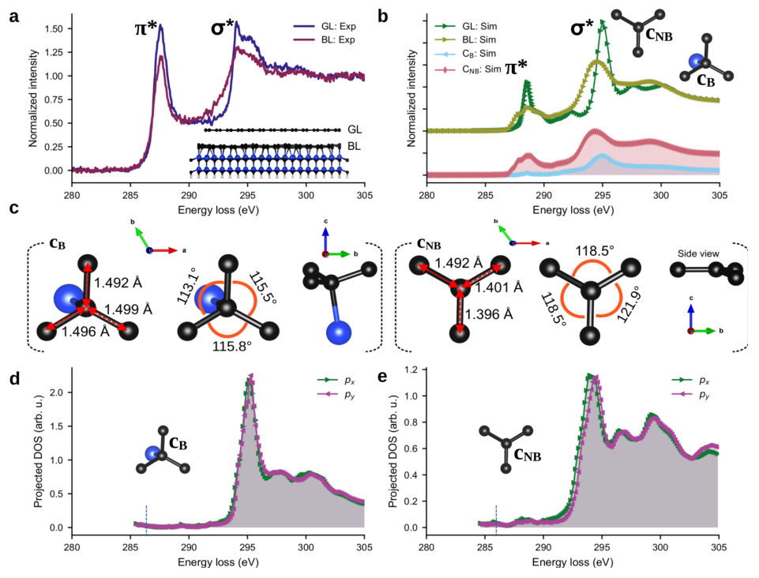
<figcaption class="paper-figure-caption"><b>Fig 3.</b> Figure 3: Orbital Reconstruction and Broken Symmetry. (a) Experimental C K- edge ELNES spectra acquired from the graphene layer (GL) and buffer layer (BL). (b) Simulated C K-edge ELNES spectra for the GL and BL. The BL spectrum is decomposed into contributions from the CNB and CB sites, with the total spectral response reproduced by a linear combination of 25% CB and 75% CNB character. (c) In-plane bond angles and bond lengths at the CB and CNB sites extracted from the structural model. Partial densities of states projected onto the (d) CB and (e) CNB sites reveal the lifting of orbital degeneracy arising from the broken structural symmetry at the CNB sites. Dashed line denotes the Fermi...</figcaption>
</figure>
</div>

<p><strong>Summary.</strong> This work investigates the electronic structure of graphene grown on SiC by combining high-resolution STEM-EELS experiments with detailed DFT calculations. The key finding is that substrate interaction induces site-specific hybridization, leading to measurable symmetry breaking in the electronic orbitals. This provides a quantitative framework for tailoring graphene interfaces for advanced electronic applications.</p>
<p><strong>Why it may be interesting.</strong> While focused on solid-state physics, the concept of engineering electronic properties via controlled interface interactions and symmetry breaking is relevant to designing quantum materials platforms.</p>
<details>
<summary>Detailed structure</summary>
<p><strong>Main problem.</strong> The study aims to understand how the interaction between epitaxial graphene and the SiC substrate modifies its electronic structure, particularly focusing on the origin of any induced bandgap or electronic changes.</p>
<p><strong>Main result.</strong> The substrate interaction causes site-specific symmetry breaking and partial sp^3 hybridization in the buffer layer, which can be spectroscopically identified by analyzing the C K-edge ELNES features.</p>
<p><strong>Method.</strong> The research combines experimental measurements using STEM-EELS with theoretical calculations employing Finite-Difference Method Near-Edge Structure (FDMNES) simulations.</p>
<p><strong>Model / system.</strong> The system is epitaxial graphene grown on SiC(0001). The analysis distinguishes between covalently bonded (CB) sites, which show sp^3 character, and non-covalently bonded (CNB) sites, which retain more sp^2 character.</p>
<p><strong>Key observables.</strong> C K-edge ELNES spectra, projected density of states (pDOS), and evidence of orbital degeneracy lifting ($p_x/p_y$ splitting).</p>
<p><strong>Important parameters / regimes.</strong> The analysis is sensitive to the degree of hybridization (sp^2 vs. sp^3) and the local symmetry breaking induced by the substrate.</p>
<p><strong>Assumptions / limitations.</strong> The analysis relies on decomposing the total spectral response into contributions from distinct bonding environments (CB and CNB) and using the dipole approximation in simulations.</p>
<p><strong>Figures summary.</strong> Figures compare experimental and simulated ELNES spectra, showing the spectral decomposition of the buffer layer into CB and CNB components, and illustrating the resulting changes in orbital symmetry.</p>
<p><strong>Paper structure.</strong> The paper establishes the experimental observation of spectral differences between free-standing and epitaxial graphene, then uses advanced theoretical modeling (FDMNES) to assign these spectral changes to specific local bonding environments and symmetry breaking mechanisms.</p>
</details>
<details>
<summary>Abstract</summary>
<p>The epitaxial graphene grown on SiC interface has been the subject of tremendous research efforts to control its electronic transport properties in the quest for graphene electronic applications. The electronic structure of the epitaxial graphene buffer layer on SiC(0001) is investigated at the atomic scale using monochromated electron energy loss spectroscopy (EELS) in an aberration-corrected scanning transmission electron microscope (STEM). The C $K$-edge reveals spectral fine structures distinctly different from free-standing graphene layer, providing direct experimental evidence of a modified bonding environment. Ab initio calculations providing a site-resolved probe of orbital character to elucidate the origin of these spectral features: covalent bonding between one-quarter of the buffer-layer carbon atoms and the substrate silicon atoms induces partial $\mathrm{sp}^3$ hybridization, quenching the out-of-plane $π$ states and disrupting $π$-conjugation across the interfacial layer. Substrate-imposed symmetry breaking further lifts the in-plane orbital degeneracy. This orbital-engineering framework, rooted in $π$-state quenching and site-specific symmetry breaking, establishes a quantitative basis for tailoring graphene-substrate interfaces toward next-generation low-energy transistor applications.</p>
</details>
<p><sub><a href="#top">↑ back to top</a></sub></p>

<p><a id="paper-2610.04724"></a></p>
<h3 id="anisotropic-friedel-oscillations-and-isoperimetric-transport-in-two-dimensional-free-lattice-fermi-seas"><a href="http://arxiv.org/abs/2610.04724v1">Anisotropic Friedel oscillations and isoperimetric transport in two-dimensional free lattice Fermi seas</a></h3>
<p><strong>Authors:</strong> Guillermo R. Zemba<br>
<strong>Type:</strong> theory · <strong>Category:</strong> other · <strong>PDF:</strong> <a href="https://arxiv.org/pdf/2610.04724v1">https://arxiv.org/pdf/2610.04724v1</a><br>
<strong>Analysis basis:</strong> full PDF text, analyzed in chunks
<strong>Topic relevance:</strong> <code>analog quantum simulation</code> <strong>1/5</strong> · <code>non-equilibrium universality</code> <strong>1/5</strong></p>
<div class="figure-strip-hint">↔ Scroll figures horizontally</div>
<div class="paper-figures-scroll">
<figure class="paper-figure-card">
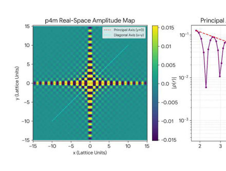
<figcaption class="paper-figure-caption"><b>Fig 1.</b> Figure 1: ρ(r, 0) for the p4m wallpaper group displaying the Fraunhofer diagram in coordinate space (left). ρ(r) = |ρ(r, 0)| vs. r = |r| and anchor-normalized power-law slow reference r−1 decay rate for principal/flat-facet cut (center). ρ(r) = |ρ(r, 0)| vs. r = r and anchor-normalized power-law standard reference r−3/2 decay rate along diagonal vertex-crossing directions (right).</figcaption>
</figure>
<figure class="paper-figure-card">
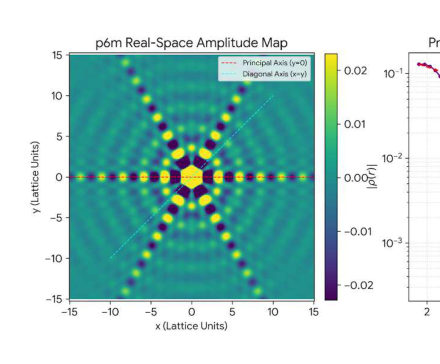
<figcaption class="paper-figure-caption"><b>Fig 2.</b> Figure 2: ρ(r, 0) for the p6m wallpaper group displaying the Fraunhofer diagram in coordinate space (left). ρ(r) = |ρ(r, 0)| vs. r = |r| and anchor-normalized power-law slow reference r−1 decay rate for principal/flat-facet cut (center). ρ(r) = |ρ(r, 0)| vs. r = r and anchor-normalized power-law standard reference r−3/2 decay rate along diagonal vertex-crossing directions (right).</figcaption>
</figure>
</div>

<p><strong>Summary.</strong> This theoretical work investigates how underlying lattice symmetries constrain the physics of 2D free electron gases, leading to anisotropic density patterns. It derives a universal relationship showing that electrical conductivity scales inversely with the square root of the Fermi surface's isoperimetric parameter. This framework unifies geometric topology, density oscillations, and transport properties into a single, powerful descriptor.</p>
<p><strong>Why it may be interesting.</strong> The work provides a powerful geometric descriptor ($\mathcal{I}$) to unify mesoscopic density physics (Friedel oscillations) with macroscopic transport (conductivity) in a way that transcends simple continuum models, suggesting new topological invariants for conductors.</p>
<details>
<summary>Detailed structure</summary>
<p><strong>Main problem.</strong> The paper explores the physical consequences of classifying 2D Fermi seas using flat orbifolds defined by discrete lattice symmetries ($\Gamma$). It connects the geometry of the Fermi surface to measurable quantities like density modulations and electrical conductivity.</p>
<p><strong>Main result.</strong> It establishes that the single-particle density matrix exhibits anisotropic Friedel oscillations dictated by lattice symmetry, and it derives a universal scaling law for conductivity: $\sigma_{xx} \propto 1/\sqrt{\mathcal{I}}$, where $\mathcal{I}$ is the isoperimetric parameter.</p>
<p><strong>Method.</strong> The analysis combines concepts from geometric measure theory, chiral anomaly calculations (bosonization), and the study of single-particle density matrices on orbifold manifolds.</p>
<p><strong>Model / system.</strong> The system is a non-interacting 2D free gas of fermions confined to a background with discrete lattice symmetries, modeled mathematically as a flat orbifold $\mathbb{R}^2/\Gamma$. The analysis covers both the density structure and the resulting macroscopic transport properties.</p>
<p><strong>Key observables.</strong> Anisotropic Friedel oscillations in the single-particle density matrix, and the longitudinal electrical conductivity ($\sigma_{xx}$).</p>
<p><strong>Important parameters / regimes.</strong> The isoperimetric parameter ($\mathcal{I}$), Fermi wavelength ($\lambda_F$), and thermal de Broglie wavelength ($\lambda_T$).</p>
<p><strong>Assumptions / limitations.</strong> The analysis relies on a mean-field approach for conductivity and assumes that the topological structure dictates the universal scaling laws, even when incorporating structural drag from orbifold corners.</p>
<p><strong>Figures summary.</strong> Figures illustrate the spatial density matrix $
ho(\mathbf{r}, 0)$ for specific lattices ($p4m, p6m$), showing anisotropic diffraction patterns, and reference power-law decay regimes.</p>
<p><strong>Paper structure.</strong> The paper progresses from analyzing the isotropic case (ideal 2D gas) to the anisotropic case using flat orbifolds. It then develops the conductivity calculation by relating the Fermi surface geometry to the isoperimetric parameter, culminating in a unified formula incorporating structural drag from orbifold corners.</p>
</details>
<details>
<summary>Abstract</summary>
<p>Two physical consequences of the recent topological classification of 2d Fermi seas for free particles based on flat orbifolds $\mathbb{R}^2/Γ$ of discrete symmetry $Γ$, are explored. The first is an study of the spatial density behavior inside the mesoscopic window enclosed by the Fermi and (infinite) thermal lengths. It is shown that the single-particle density matrix exhibits a sharp directional anisotropy, encoding a real space diffraction pattern, {\it i.e.}, a Fraunhofer-like diagram of the Fermi sea, that reveals the point-group symmetries of the background lattice $Γ$ in the form of anisotropic Friedel oscillations. As examples, the special cases of the $p4m$ and $p6m$ crystallographic flat orbifolds are treated in some detail. The second physical consequence is the establishment of an explicit geometric correspondence between momentum-space packing and electrical transport. A mean-field expression for the longitudinal electrical conductivity $σ_{xx}$ as a function of the {\it isoperimetric parameter} $\cal{I}$ of the occupied orbifold domain by utilizing geometric measure theory is presented, satisfiying the scaling law $ σ_{xx} \propto 1/\sqrt{\cal{I}}$. The topological transport formula naturally incorporates the vanishing conductivity ($σ_{xx} \to 0$) of the previously described ``geometric insulators,'' promoting the isoperimetric parameter as an efficient descriptor for topological and geometric phases in conductors.</p>
</details>
<p><sub><a href="#top">↑ back to top</a></sub></p>

<p><a id="paper-2610.06283"></a></p>
<h3 id="first-principles-investigation-of-multimodal-toxic-gas-sensing-in-carbon-tuned-hbn-graphene-alloys-chemiresistive-work-function-and-optical-responses"><a href="http://arxiv.org/abs/2610.06283v1">First-Principles Investigation of Multimodal Toxic Gas Sensing in Carbon-Tuned hBN-Graphene Alloys: Chemiresistive, Work-Function, and Optical Responses</a></h3>
<p><strong>Authors:</strong> Tanjuma Shikder Jhumu, Ahmed Zubair<br>
<strong>Type:</strong> theory · <strong>Category:</strong> other · <strong>PDF:</strong> <a href="https://arxiv.org/pdf/2610.06283v1">https://arxiv.org/pdf/2610.06283v1</a><br>
<strong>Analysis basis:</strong> full PDF text, analyzed in chunks
<strong>Topic relevance:</strong> <code>Keldysh / 2PI / non-Gaussian methods</code> <strong>1/5</strong> · <code>quantum measurements</code> <strong>1/5</strong></p>
<div class="figure-strip-hint">↔ Scroll figures horizontally</div>
<div class="paper-figures-scroll">
<figure class="paper-figure-card">
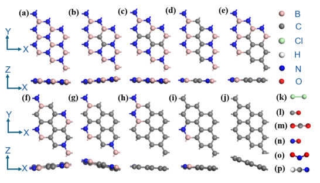
<figcaption class="paper-figure-caption"><b>Fig 1.</b> Fig. 1 Geometry optimized (a) hBN, (b) BNGr-1 (11% C), (c) BNGr-2 (22% C), (d) BNGr-3 (33% C), (e) BNGr-4 (44% C), (f) BNGr-5 (56% C), (g) BNGr-6 (67% C), (h) BNGr-7 (78% C), (i) BNGr-8 (89% C), and (j) Graphene, and gas molecules of (k) Cl2, (l) CO, (m) CO2, (n) NO, (o) NO2, and (p) HCN.</figcaption>
</figure>
<figure class="paper-figure-card">
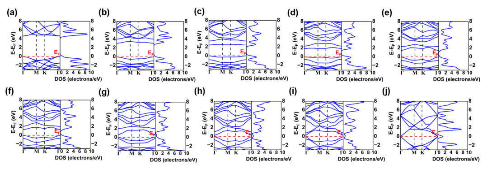
<figcaption class="paper-figure-caption"><b>Fig 2.</b> Fig. 2 Band structure and density of states (DOS) of (a) hBN monolayer, (b) BNGr-1, (c) BNGr-2, (d) BNGr-3, (e) BNGr-4, (f) BNGr-5, (g) BNGr-6, (h) BNGr-7, (i) BNGr-8, and (j) Graphene.</figcaption>
</figure>
<figure class="paper-figure-card">
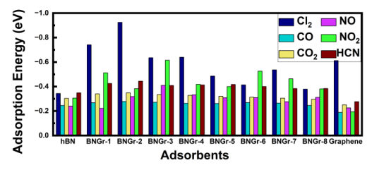
<figcaption class="paper-figure-caption"><b>Fig 3.</b> Fig. 3 Adsorption energy of gas molecules Cl2, CO, CO2, NO, NO2, and HCN on hBN-Gr alloys.</figcaption>
</figure>
<figure class="paper-figure-card">
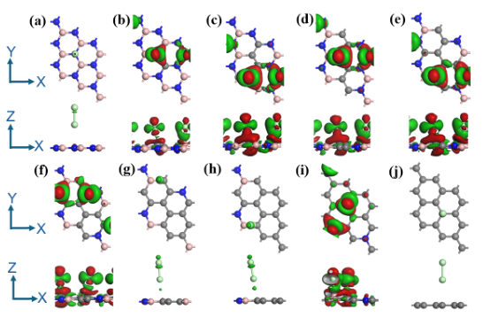
<figcaption class="paper-figure-caption"><b>Fig 4.</b> Fig. 5 Electron Density Difference of Cl2 adsorbed (a) hBN, (b) BNGr- 1, (c) BNGr-2, (d) BNGr-3, (e) BNGr-4, (f) BNGr-5, (g) BNGr-6, (h) BNGr-7, (i) BNGr-8, and (j) Graphene. Here the green (red) color de- notes electron accumulation (depletion). Isovalue is 0.025 electrons per Å−3.</figcaption>
</figure>
<figure class="paper-figure-card">
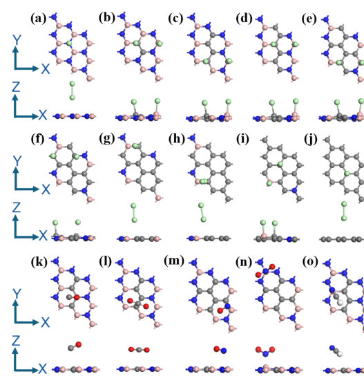
<figcaption class="paper-figure-caption"><b>Fig 5.</b> Fig. 4 Gas adsorbed systems of (a) Cl2/hBN, (b) Cl2/BNGr-1, (c) Cl2/BNGr-2, (d) Cl2/BNGr-3, (e) Cl2/BNGr-4, (f) Cl2/BNGr-5, (g) Cl2/BNGr-6, (h) Cl2/BNGr-7, (i) Cl2/BNGr-8, (j) Cl2/graphene, (k) CO/BNGr-2, (l) CO2/BNGr-2, (m) NO/BNGr-3, (n) NO2/BNGr-3, and (o) HCN/BNGr-2</figcaption>
</figure>
</div>

<p><strong>Summary.</strong> This theoretical study uses DFT to investigate how carbon doping in hBN-Graphene alloys tunes their electronic structure for use as gas sensors. The research identifies optimal alloy compositions for detecting various toxic gases ($   ext{Cl}_2,  ext{CO},    ext{NOx}$, etc.) via chemiresistive, work function, and optical responses. The findings suggest these engineered alloys are highly promising candidates for next-generation environmental monitoring devices.</p>
<p><strong>Why it may be interesting.</strong> While the primary focus is materials science/chemistry, the use of first-principles methods to predict macroscopic device behavior (sensing) is relevant to theoretical condensed matter physics, particularly in modeling interfacial charge transfer and electronic state changes.</p>
<details>
<summary>Detailed structure</summary>
<p><strong>Main problem.</strong> The development of compact, reliable, and cost-effective gas sensors for monitoring hazardous gas emissions in various industrial and safety applications.</p>
<p><strong>Main result.</strong> Carbon-tuned hBN-Graphene alloys show promise as multimodal gas sensors, with different carbon ratios optimizing performance for specific gas types ($ ext{NOx}$ for $ ext{BNGr-3}$, $ ext{Cl}_2$ for $    ext{BNGr-2}$).</p>
<p><strong>Method.</strong> First-principles calculations using Density Functional Theory (DFT) were employed to model gas adsorption and electronic responses.</p>
<p><strong>Model / system.</strong> The physical system consists of hexagonal boron nitride ($  ext{hBN}$) and graphene ($    ext{Gr}$) alloys, where varying carbon content tunes the electronic properties. The study investigates adsorption of $  ext{Cl}_2$, $   ext{CO}$, $ ext{CO}_2$, $   ext{NO}$, $ ext{NO}_2$, and $   ext{HCN}$ onto these alloys.</p>
<p><strong>Key observables.</strong> Adsorption energy, charge transfer, bandgap alteration, chemiresistive sensitivity, work function variation ($\sim 20\%$), and distinct optical absorption spectra.</p>
<p><strong>Important parameters / regimes.</strong> Carbon content (e.g., 22% for $ ext{BNGr-2}$, 33% for $ ext{BNGr-3}$), temperature (up to $425 	ext{ K}$), and gas analyte identity.</p>
<p><strong>Assumptions / limitations.</strong> The calculations rely on DFT approximations (GGA with PBE functional) and assume that the observed electronic and chemical changes are indicative of real-world sensor performance.</p>
<p><strong>Figures summary.</strong> Figures illustrate optimized geometries, band structures, and density of states (DOS) for the alloys and adsorbed gases, alongside spectral data for different gas analytes.</p>
<p><strong>Paper structure.</strong> The paper systematically investigates the effect of varying carbon ratios in hBN-Gr alloys, calculating adsorption energies and electronic properties for multiple toxic gases, and analyzing the resulting chemiresistive, work function, and optical sensing characteristics.</p>
</details>
<details>
<summary>Abstract</summary>
<p>Compact, reliable, and cost-effective gas sensors have become a highly demanding subject for safety management in the medical sector, chemical manufacturing, food quality monitoring, agriculture, and industrial safety. Hazardous gas emissions need to be controlled and monitored with fast-responsive and highly sensitive sensing devices. A first-principles study employing density functional theory (DFT) was used to investigate the adsorption behavior of Cl2, CO, CO2, NO, NO2, and HCN gas molecules with our proposed alloys, which consisted of hexagonal boron nitride (hBN) and graphene (Gr). The alloy consisting of 22% carbon (BNGr-2) was found to be most competent for sensing Cl2, CO, CO2, and HCN with sufficient adsorption energy, charge transfer, and bandgap alteration. However, NO and NO2 gas molecules showed more engagement with 33% carbon-proportioned alloy (BNGr-3) in terms of adequate gas sensing properties. NOx gases exhibited the most chemiresistive sensitivity towards the adsorbents. Other gases also showed significant chemiresistive sensitivity and distinct selectivity ratios, which would facilitate these alloys as chemiresistive sensors. Besides, noticeable work function variation (~20%) of these systems manifested potential as work function based sensors. Cl2 and NO2 showed strong physical adsorption, while the rest of the gases were weakly to moderately physisorbed, resulting in very short recovery times (10-1 ~ 10-6 seconds). Additionally, the distinctive absorption spectra observed for the gas analyte systems highlighted the potential of the proposed alloys as optical gas sensors. Temperature variation revealed that all gas molecules can be freed from the adsorbent BNGr-2 at 425 K. These findings imply hBN-Gr alloys as promising gas sensors for pollution auditing.</p>
</details>
<p><sub><a href="#top">↑ back to top</a></sub></p>

<p><a id="paper-2610.05903"></a></p>
<h3 id="giant-nonlinearity-of-kinetic-inductance-in-superconducting-hybrid-strip"><a href="http://arxiv.org/abs/2610.05903v1">Giant nonlinearity of kinetic inductance in superconducting hybrid strip</a></h3>
<p><strong>Authors:</strong> D. Yu. Vodolazov, Yu. P. Korneeva, M. A. Dryazgov, S. S. Ustavschikov, N. V. Porokhov, N. N. Osipov, I. Yu. Pashenkin, A. A. Korneev, M. A. Tarkhov<br>
<strong>Type:</strong> experiment · <strong>Category:</strong> other · <strong>PDF:</strong> <a href="https://arxiv.org/pdf/2610.05903v1">https://arxiv.org/pdf/2610.05903v1</a><br>
<strong>Analysis basis:</strong> full PDF text, analyzed in chunks
<strong>Topic relevance:</strong> <code>QC/QI experiment</code> <strong>1/5</strong> · <code>quantum measurements</code> <strong>1/5</strong></p>
<div class="figure-strip-hint">↔ Scroll figures horizontally</div>
<div class="paper-figures-scroll">
<figure class="paper-figure-card">
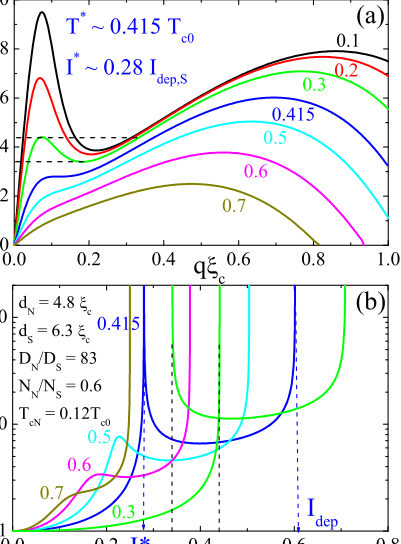
<figcaption class="paper-figure-caption"><b>Fig 1.</b> FIG. 1. (a) Theoretical dependence of the superconducting current on momentum for an NbN/Al hybrid at different tem- peratures, color-coded and measured in units of the critical temperature of the S layer Tc0 (here Tc0 = 10K and ξc = p</figcaption>
</figure>
<figure class="paper-figure-card">
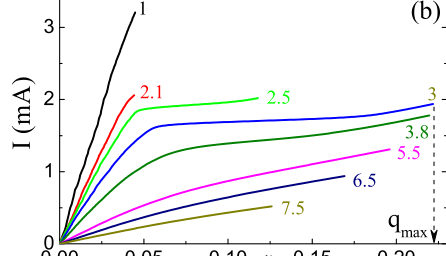
<figcaption class="paper-figure-caption"><b>Fig 2.</b> FIG. 2. ((a) Current-dependent inductance of the NbN(40 nm)/Al(30 nm) strip (w = 1.6µm, ℓ= 500µm) at differ- ent temperatures, indicated by colored numbers. The inset shows the temperature-dependent critical current of the hy- brid strip. (b) Current-momentum dependence for the same sample.</figcaption>
</figure>
<figure class="paper-figure-card">
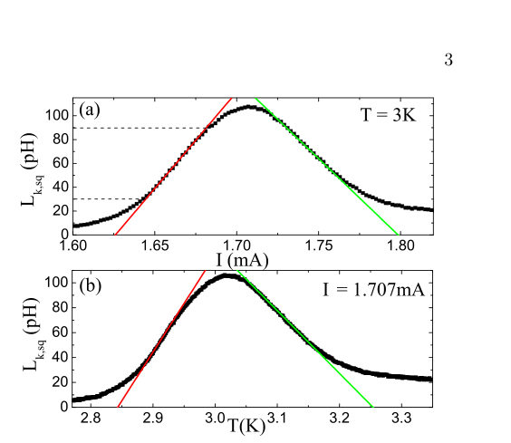
<figcaption class="paper-figure-caption"><b>Fig 3.</b> FIG. 3. (a) Enlarged part of Lk(I) from Fig. 2(a) at T = 3 K. Red and green lines indicate nearly linear dependencies with positive and negative slopes dLk/dI. (b) Dependence of the kinetic inductance on the temperature of the NbN(40 nm)/Al(30 nm) strip at Idc = 1.707 mA (it corresponds to the maximum of Lk(I) at T = 3 K). Red and green lines indicate nearly linear dependencies with positive and negative slopes dLk/dT .</figcaption>
</figure>
<figure class="paper-figure-card">
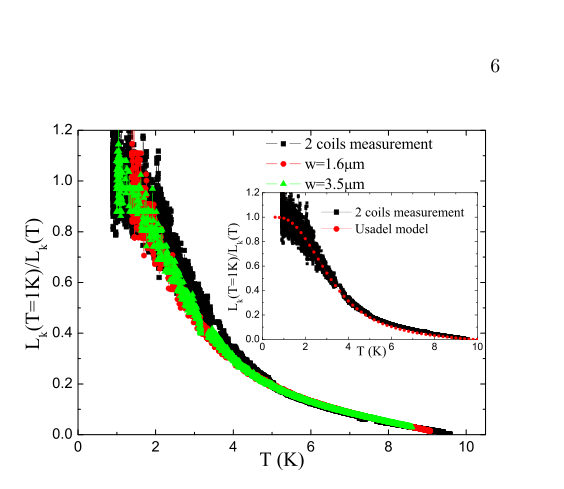
<figcaption class="paper-figure-caption"><b>Fig 4.</b> FIG. 4. Dependence of the kinetic inductance of NbN(40nm)/Al(30nm) film on temperature, measured us- ing two-coil technique. On the same figure we show Lk(T ) for samples Smed and Swide which has been extracted from impedance measurements with Lg as the only fitting param- eter. In the inset we compare theoretical and experimental Lk(T ) dependencies.</figcaption>
</figure>
<figure class="paper-figure-card">
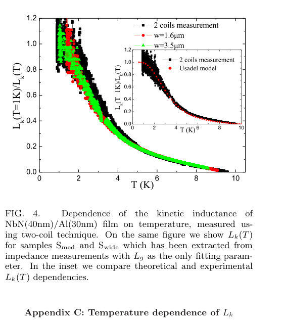
<figcaption class="paper-figure-caption"><b>Fig 5.</b> Figure 4 shows the dependencies of Lk(T ) obtained using the two-coil technique and temperature-dependent impedance. For the strips, the geometric inductance Lg was used as the only fitting parameter, the value of which is presented in Table 1. The resulting Lk,sq(1 K) values for the different strips are given in Table 1.</figcaption>
</figure>
</div>

<p><strong>Summary.</strong> This work demonstrates a giant, 50-fold nonlinearity in the kinetic inductance of superconducting $    ext{NbN/Al}$ hybrid strips. This effect arises from a plateau in the current-momentum relationship at a current well below the depairing limit. The findings suggest new pathways for developing highly sensitive quantum detectors, magnetometers, and parametric amplifiers.</p>
<p><strong>Why it may be interesting.</strong> The strong, controllable nonlinearity in a superconducting parameter like $L_k$ offers a novel mechanism for building highly sensitive quantum sensors or non-linear elements, which is relevant to quantum measurement and circuit QED.</p>
<details>
<summary>Detailed structure</summary>
<p><strong>Main problem.</strong> The paper investigates the phenomenon of 'giant nonlinearity' in the kinetic inductance ($L_k$) of superconducting hybrid strips.</p>
<p><strong>Main result.</strong> The authors observed a 50-fold change in $L_k$, significantly exceeding the variation seen in ordinary superconductors. This nonlinearity is linked to a plateau in the current-momentum dependence of the superconducting current $I(q)$ at a current $I^*$ below the depairing current.</p>
<p><strong>Method.</strong> Measurements were performed using low-frequency impedance and two-coil techniques on $  ext{NbN/Al}$ hybrid strips to determine $L_k(I)$ and $L_k(T)$.</p>
<p><strong>Model / system.</strong> The physical system is a superconducting $  ext{NbN/Al}$ hybrid strip. The theoretical understanding relies on analyzing the proximity-induced superconductivity in the Al layer, which dictates the relationship between superconducting current $I$ and Cooper pair momentum $\hbar q$.</p>
<p><strong>Key observables.</strong> Kinetic inductance ($L_k$), current-induced variation of $L_k$, and the current-momentum dependence $I(q)$.</p>
<p><strong>Important parameters / regimes.</strong> The nonlinearity is maximal near a characteristic current $I^*$ which is below the depairing current, and the effect is observed at temperatures around $T^* \approx 3 	ext{ K}$.</p>
<p><strong>Assumptions / limitations.</strong> The analysis assumes the physical effect is governed by the plateau in $I(q)$ leading to $L_k \sim dq/dI 	o \infty$ as $I 	o I^*$. Discrepancies with theory are attributed to edge defects.</p>
<p><strong>Figures summary.</strong> Figures illustrate the measured $L(I)$ and calculated $I(q)$ dependence, showing the sharp nonlinearity. Other figures compare $L_k(T)$ measurements to theoretical predictions from the Usadel model.</p>
<p><strong>Paper structure.</strong> The paper details the experimental measurement of $L_k(I)$ and $L_k(T)$ in the hybrid strips, relates these measurements to the theoretical framework involving the Usadel equation, and concludes by discussing the implications of the observed giant nonlinearity for various quantum devices.</p>
</details>
<details>
<summary>Abstract</summary>
<p>We demonstrate giant nonlinearity of the kinetic inductance $L_k$ in a superconducting NbN/Al hybrid strip. In contrast to ordinary superconductors, where the maximum observed current-induced variation of $L_k$ does not exceed tens of percent, we observe a 50-fold change in $L_k$. Physically, this effect is connected with the proximity-induced superconductivity in the Al layer and the specific choice of parameters for which the dependence of the superconducting current $I$ on the Cooper pair momentum $\hbar q$ exhibits a plateau at a current $I^*$ {\it well below} the depairing current. Formally, this leads to $L_k \sim dq/dI \to \infty$ as $I \to I^*$. We believe that our results open a new route for creating the next generation of highly sensitive detectors of electromagnetic radiation, calorimeters, parametric amplifiers, and magnetometers.</p>
</details>
<p><sub><a href="#top">↑ back to top</a></sub></p>

<p><a id="paper-2610.05895"></a></p>
<h3 id="bifurcation-of-laser-dressed-band-extrema-in-solids-under-intense-low-frequency-fields"><a href="http://arxiv.org/abs/2610.05895v1">Bifurcation of laser-dressed band extrema in solids under intense low-frequency fields</a></h3>
<p><strong>Authors:</strong> Alexander Flegel, Liang-Wen Pi, Liang-You Peng, Mikhail Frolov<br>
<strong>Type:</strong> theory · <strong>Category:</strong> other · <strong>PDF:</strong> <a href="https://arxiv.org/pdf/2610.05895v1">https://arxiv.org/pdf/2610.05895v1</a><br>
<strong>Analysis basis:</strong> full PDF text, analyzed in chunks
<strong>Topic relevance:</strong> <code>Keldysh / 2PI / non-Gaussian methods</code> <strong>1/5</strong></p>
<div class="figure-strip-hint">↔ Scroll figures horizontally</div>
<div class="paper-figures-scroll">
<figure class="paper-figure-card">
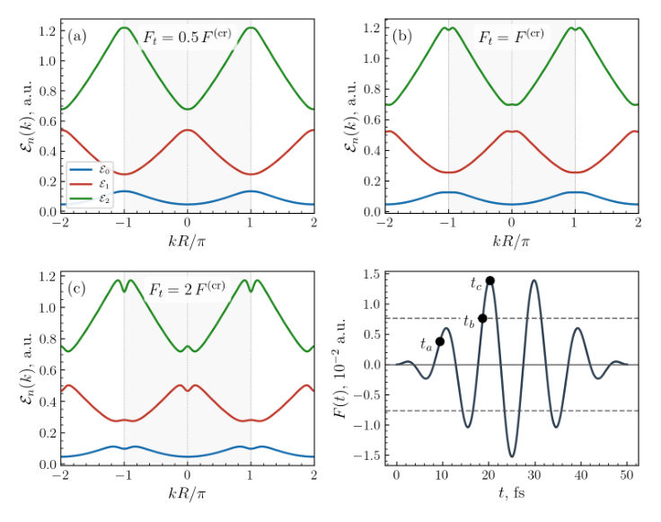
<figcaption class="paper-figure-caption"><b>Fig 1.</b> Figure 1. (a)–(c) Laser-dressed bands En(k), n = 0, 1, 2, of the Kronig–Penney model for three values of the instantaneous laser field strength Ft indicated in the panels; the shaded region marks the first Brillouin zone, and the vertical dotted lines indicate the high-symmetry points Γ (k = 0) and X (kR/π = ±1). With increasing Ft the extrema of the dressed bands at X and Γ flatten and, for Ft &gt; F (cr), split into pairs of symmetry-related extrema. (d) Temporal profile of the driving pulse F(t) of peak amplitude 2F (cr); the horizontal dashed lines mark ±F (cr), and the filled circles indicate the instants ta, tb, tc at which the instantaneous field equals the values used in panels...</figcaption>
</figure>
<figure class="paper-figure-card">
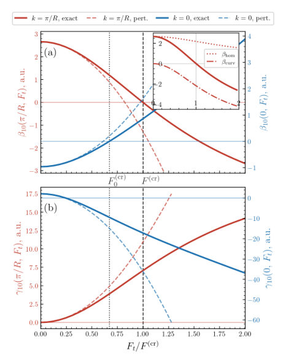
<figcaption class="paper-figure-caption"><b>Fig 2.</b> Figure 2. (a) Quadratic coefficient β10(k0, Ft) versus the in- stantaneous field strength Ft for the high-symmetry points k0 = π/R (red, left axis) and k0 = 0 (blue, right axis). Solid lines: exact results from the curvature representation Eq. (37); dashed lines: perturbative expansion Eq. (49). Ver- tical dashed (dotted) line marks the critical field F (cr) = 7.6×10−3 a.u. (F (cr) 0 = 5.1×10−3 a.u.) at which β10 vanishes for k0 = π/R (k0 = 0). Inset: exact decomposition (48) into the homogeneous βhom (dotted) and curvature βcurv (dash- dotted) contributions, showing that the sign change of β10 is driven by βcurv. (b) Quartic coefficient γ10(k0, F) for the same points; solid (dashed) lines...</figcaption>
</figure>
<figure class="paper-figure-card">
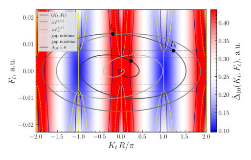
<figcaption class="paper-figure-caption"><b>Fig 3.</b> Figure 3. Laser-dressed gap ˜∆10(Kt, Ft) shown as a color- coded map. Yellow solid (dashed) curves trace the field- dependent positions of the local minima (maxima) of the gap; dark solid lines indicate where β = β10(Kt, Ft) = 0. Horizon- tal dashed and dotted lines indicate the critical fields ±F (cr)</figcaption>
</figure>
<figure class="paper-figure-card">
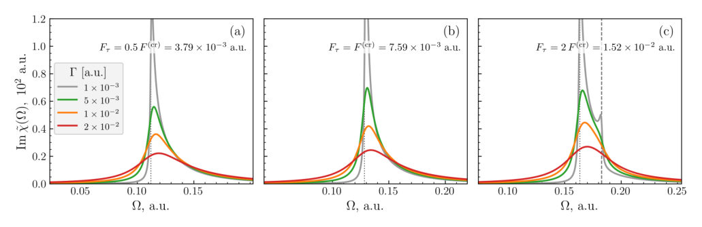
<figcaption class="paper-figure-caption"><b>Fig 4.</b> Figure 4. Imaginary part of the instantaneous interband susceptibility ˜χ(Ω; Fτ) [Eq. (50)] for three instantaneous field strengths in the Kronig–Penney model; different curves correspond to the indicated phenomenological broadening Γ. Dotted lines mark the absorption edge ˜Ω= mink ˜∆10(k, Fτ); in panel (c) the dashed line marks ΩX = ˜∆10(k0, Fτ), the dressed-gap value at the field-induced local maximum at X. Below F (cr) a single edge feature is present; at F (cr) the quartic critical dispersion modifies the spectral onset; above F (cr) an additional feature emerges at ΩX, providing a spectroscopic signature of the gap bifurcation. Model parameters as in Fig. 1.</figcaption>
</figure>
</div>

<p><strong>Summary.</strong> This paper theoretically demonstrates that intense, low-frequency laser fields can induce a qualitative bifurcation in the energy gap structure of crystalline solids. This phenomenon, which changes the local minimum geometry, is driven by field-modified band curvature and is spectroscopically observable as an additional feature in the interband susceptibility.</p>
<p><strong>Why it may be interesting.</strong> This work provides a general, non-perturbative mechanism for how strong-field dressing modifies the local geometry of the electronic spectrum, which is highly relevant for understanding ultrafast spectroscopy and light-matter interactions in solids.</p>
<details>
<summary>Detailed structure</summary>
<p><strong>Main problem.</strong> The study investigates how an intense, low-frequency laser field can qualitatively alter the local extremal structure of the interband energy gap within a crystalline solid.</p>
<p><strong>Main result.</strong> The gap exhibits a bifurcation at a critical field strength, where a single minimum splits into two symmetry-related minima separated by a local maximum. This is signaled spectroscopically by the emergence of an additional van Hove feature in the interband susceptibility.</p>
<p><strong>Method.</strong> The authors derive a quartic normal form for the dressed gap near a high-symmetry point and analyze the system using an instantaneous laser-dressed basis obtained from nonperturbative diagonalization of the multiband Hamiltonian.</p>
<p><strong>Model / system.</strong> The theory is applied to the electronic structure of solids, using the 1D Kronig-Penney model as a concrete realization. The dynamics are governed by the time-dependent Schrödinger equation under the influence of a strong, low-frequency laser field.</p>
<p><strong>Key observables.</strong> Local extremal structure of the interband gap, interband susceptibility ($ ilde{\chi}$), and the bifurcation point ($F^{(cr)}$).</p>
<p><strong>Important parameters / regimes.</strong> Intense low-frequency laser field strength ($F_t$), crystal momentum ($K_t$), and the critical field strength ($F^{(cr)}$).</p>
<p><strong>Assumptions / limitations.</strong> The analysis relies on an adiabatic approximation, assuming the field-dressed Hamiltonian varies slowly compared to interband energy scales, and focuses on the instantaneous spectral structure.</p>
<p><strong>Figures summary.</strong> Figures illustrate the bifurcation structure of the dressed gap $  ilde{\Delta}<em>{10}(K_t, F_t)$ and show the spectral evolution of the interband susceptibility $  ilde{\chi}(\Omega; F</em>   au)$ across the critical field.</p>
<p><strong>Paper structure.</strong> The paper develops the formalism by establishing the instantaneous laser-dressed basis, deriving the normal form for the gap, identifying the microscopic origin of the bifurcation (field-modified band-curvature contribution), and finally demonstrating the spectral consequences using the Kronig-Penney model.</p>
</details>
<details>
<summary>Abstract</summary>
<p>We show that an intense low-frequency laser field can qualitatively modify the local extremal structure of an interband energy gap in a crystal. Using an instantaneous laser-dressed basis obtained from the nonperturbative diagonalization of the multiband crystal Hamiltonian, we derive a quartic normal form for the dressed gap near a high-symmetry point. At a critical field, the quadratic part of this normal form changes sign, and the gap experiences a bifurcation: a single symmetric minimum splits into two symmetry-related minima separated by a local maximum. We identify the microscopic origin of this bifurcation by decomposing the quadratic part into a homogeneous Stark contribution and a field-modified band-curvature contribution. The latter originates from the multiband redistribution of interband polarizations and provides the mechanism for the field-induced change of the gap extrema. A realization for the Kronig--Penney model demonstrates the same bifurcation at multiple high-symmetry points and for different interband gaps. As an illustration of its spectral consequences, we show that the bifurcation gives rise to an additional van Hove feature in the instantaneous interband susceptibility above the absorption edge. Our results establish a general mechanism by which strong-field dressing modifies the local geometry of the electronic spectrum.</p>
</details>
<p><sub><a href="#top">↑ back to top</a></sub></p>

<p><a id="paper-2610.05496"></a></p>
<h3 id="density-functional-theory-for-2d-transition-metal-dichalcogenides-with-extended-hubbard-parameters"><a href="http://arxiv.org/abs/2610.05496v1">Density Functional Theory for 2D Transition-Metal Dichalcogenides with Extended Hubbard Parameters</a></h3>
<p><strong>Authors:</strong> Xue Li, Suad Alshammari, Igor Rozhansky, James G. McHugh, Vladimir Falko<br>
<strong>Type:</strong> theory · <strong>Category:</strong> strongly correlated electrons · <strong>PDF:</strong> <a href="https://arxiv.org/pdf/2610.05496v1">https://arxiv.org/pdf/2610.05496v1</a><br>
<strong>Analysis basis:</strong> full PDF text, analyzed in chunks
<strong>Topic relevance:</strong> <code>analog quantum simulation</code> <strong>1/5</strong></p>
<div class="figure-strip-hint">↔ Scroll figures horizontally</div>
<div class="paper-figures-scroll">
<figure class="paper-figure-card">
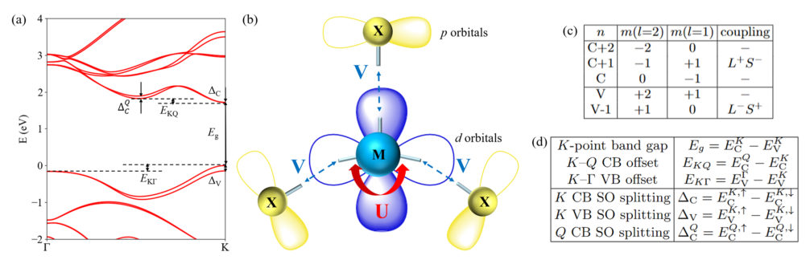
<figcaption class="paper-figure-caption"><b>Fig 1.</b> FIG. 1. (a) Overview of the band structure of monolayer TMDs (MX2, exemplified for MoS2) obtained from DFT calculations. Dispersion along Γ −K line in the Brillouin zone, illustrating the various band offsets and SO splittings we consider in this work. (b) U is on-metal site Hubbard interaction, V is inter-site Hubbard interaction, and on-chalcogen Hubbard interaction is neglected. (c) Orbital composition of metal and chalcogen components of Bloch states, and allowed second-order contributions to SO splitting with the CB, C, at the K point in monolayer TMDs. (d) Key band-edge quantities used throughout this work.</figcaption>
</figure>
<figure class="paper-figure-card">
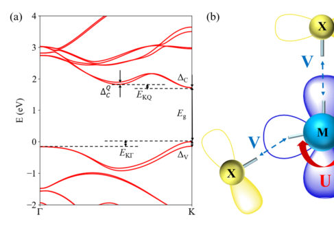
<figcaption class="paper-figure-caption"><b>Fig 2.</b> Figure 2 illustrates the dependence of the K-point CB- edge orbital weights on both Hubbard parameters. With increasing inter-site V , the Mo-d weight, wMo decreases, with a corresponding increase in the S-p-orbital contri- bution, as wS = 1 −wMo. In addition, we note that</figcaption>
</figure>
<figure class="paper-figure-card">
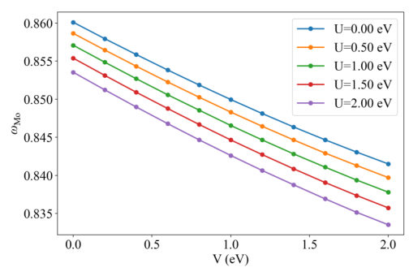
<figcaption class="paper-figure-caption"><b>Fig 3.</b> FIG. 2. Dependence of the metal wMo orbital weight of CB at K point on the inter-site Hubbard parameter V for different on-site Hubbard parameters U.</figcaption>
</figure>
<figure class="paper-figure-card">
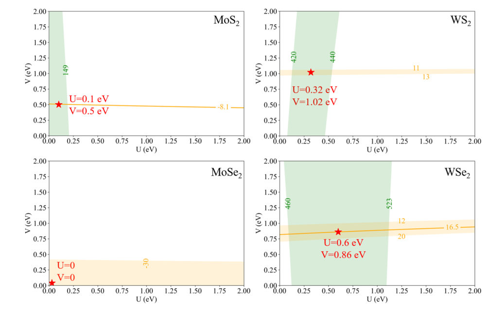
<figcaption class="paper-figure-caption"><b>Fig 4.</b> FIG. 3. Optimization of the Hubbard parameters U and V for WS2, MoSe2, and WSe2. For MoS2, we use previously optimized values [3]. The shaded orange and green regions show the parameter spaces consistent with the experimental ranges of the CB (∆C) and VB (∆V ) SO splittings, respectively. For MoSe2 and WSe2, the central CB benchmark is obtained from transport after removing the finite-density many-body enhancement; for WS2, where a comparable transport benchmark is unavailable, it is taken from the optical value ∆C = 12 meV. The VB benchmarks are taken from ARPES. The red stars mark the selected U, V pairs corresponding to the central CB and VB benchmark values.</figcaption>
</figure>
<figure class="paper-figure-card">
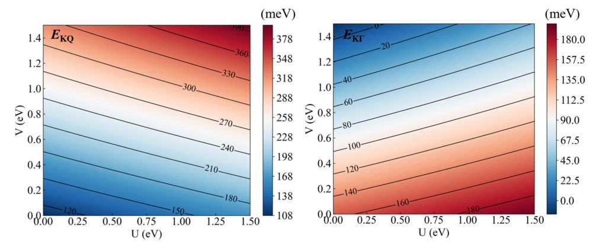
<figcaption class="paper-figure-caption"><b>Fig 5.</b> FIG. 4. Contour maps of band edge offsets of monolayer MoS2 as functions of the Hubbard interaction strengths U and V .</figcaption>
</figure>
</div>

<p><strong>Summary.</strong> This work develops an advanced DFT+U+V framework to accurately model the electronic properties of 2D TMDs. By optimizing Hubbard parameters using experimental spin-orbit splitting data, the authors achieve quantitative improvements in predicting band gaps and interlayer potentials. This provides a scalable tool for high-throughput electronic structure calculations in 2D materials.</p>
<p><strong>Why it may be interesting.</strong> The explicit inclusion of Hubbard parameters ($U, V$) directly addresses strong electronic correlations, which is a central theme in many-body physics and correlated electron systems, making it highly relevant.</p>
<details>
<summary>Detailed structure</summary>
<p><strong>Main problem.</strong> The core challenge is accurately modeling the band-edge electronic structure of 2D Transition-Metal Dichalcogenides (TMDs) because standard DFT functionals fail to capture necessary orbital interactions.</p>
<p><strong>Main result.</strong> The proposed Hubbard DFT+U+V framework successfully improves the quantitative agreement of calculated band gaps, spin-orbit splittings, and ferroelectric potentials with experimental measurements.</p>
<p><strong>Method.</strong> The authors supplement the standard PBE DFT functional by adding on-metal ($U$) and metal--chalcogen ($V$) Hubbard corrections to the Hamiltonian.</p>
<p><strong>Model / system.</strong> The study focuses on 2D TMDs (e.g., MoS2, WS2) in monolayer and multilayer configurations. The model incorporates Hubbard terms to correct for deficiencies in describing orbital mixing and electron correlation effects.</p>
<p><strong>Key observables.</strong> Spin-orbit splitting ($\Delta_C, \Delta_V$) at band edges, band gap ($E_g$), and ferroelectric potential drop ($\Delta F_E$) in bilayers.</p>
<p><strong>Important parameters / regimes.</strong> The key parameters optimized are the Hubbard interaction strengths, $U$ (on-metal) and $V$ (metal--chalcogen).</p>
<p><strong>Assumptions / limitations.</strong> The on-chalcogen Hubbard interaction is neglected, and the method relies on optimizing $U$ and $V$ by matching calculated SO splittings to experimental benchmarks.</p>
<p><strong>Figures summary.</strong> Figures illustrate the band structure, the dependence of orbital weights on the $V$ parameter, and the comparison of calculated vs. experimental values for key band-edge quantities.</p>
<p><strong>Paper structure.</strong> The paper establishes the need for improved electronic structure modeling in TMDs, introduces the DFT+U+V methodology, optimizes $U$ and $V$ using SO splitting data, and finally demonstrates the quantitative improvement across multiple physical properties.</p>
</details>
<details>
<summary>Abstract</summary>
<p>Accurate modelling of the band-edge electronic structure of transition metal dichalcogenides (TMDs), such as MoS$_2$, is essential for understanding their optical, electronic and spintronic properties and enabling future applications. Here, we supplement the standard PBE exchange-correlation functional with on-metal ($U$) and metal--chalcogen ($V$) Hubbard corrections, which can control the orbital composition of band-edge states and consequently improve the quantitative accuracy of various properties. For MoS$_2$, MoSe$_2$, WS$_2$, and WSe$_2$, we optimise the $U$ and $V$ parameters by comparison with experimentally measured spin--orbit splittings at the conduction and valence band edges, and show that these optimal choices also improve agreement of the computed band gap, and ferroelectric potential drop in rhombohedral bilayers, with experimentally measured values. This provides a highly efficient, scalable framework for quantitatively accurate, high-throughput calculations of monolayer and multilayer TMDs, suitable for implementation in 2D-materials databases, as well as large-scale electronic and spintronic device modelling.</p>
</details>
<p><sub><a href="#top">↑ back to top</a></sub></p>

<p><a id="paper-2610.04684"></a></p>
<h3 id="electron-phonon-control-of-obstructed-and-quantum-spin-hall-topology-in-an-altermagnet"><a href="http://arxiv.org/abs/2610.04684v1">Electron-phonon control of obstructed and quantum spin Hall topology in an altermagnet</a></h3>
<p><strong>Authors:</strong> Kuntal Bhattacharyya, Bilal Tanatar, Saurabh Basu<br>
<strong>Type:</strong> theory · <strong>Category:</strong> other · <strong>PDF:</strong> <a href="https://arxiv.org/pdf/2610.04684v1">https://arxiv.org/pdf/2610.04684v1</a><br>
<strong>Analysis basis:</strong> full PDF text, analyzed in chunks
<strong>Topic relevance:</strong> <code>analog quantum simulation</code> <strong>1/5</strong></p>
<div class="figure-strip-hint">↔ Scroll figures horizontally</div>
<div class="paper-figures-scroll">
<figure class="paper-figure-card">
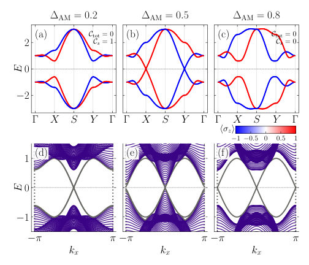
<figcaption class="paper-figure-caption"><b>Fig 1.</b> FIG. 1. (a)–(c) Evolution of the bulk spectra of the AM-BHZ model with increasing altermagnetic strength ∆AM, display- ing that the bulk spectrum undergoes a gap-closing transition at the critical value ∆c AM = 0.5, distinguishing the spin-Chern (Cs) phase from the topologically distinct regime at larger ∆AM. (d)–(f) corresponding edge spectra, showing the pro- gressive reconstruction of the boundary states across the tran- sition, with panel (f) displaying the SEB characteristics of the ∆AM &gt; 0.5 regime.</figcaption>
</figure>
<figure class="paper-figure-card">
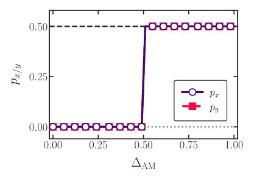
<figcaption class="paper-figure-caption"><b>Fig 2.</b> FIG. 3. Bulk polarization (px/y) is plotted with ∆AM. At ∆c AM = 0.5, both components jump from px/y = 0 (which describes a first-order topological phase with Cs ≠0) to the quantized value px/y = 1/2, providing a bulk topological char- acterization of the OAI phase.</figcaption>
</figure>
<figure class="paper-figure-card">
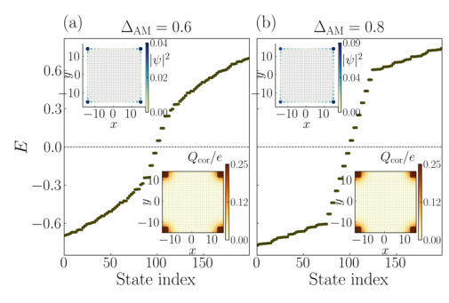
<figcaption class="paper-figure-caption"><b>Fig 3.</b> FIG. 2. Open-boundary energy spectra for (a) ∆AM = 0.6 and (b) ∆AM = 0.8, corresponding to the parameter regime where the SEBs emerge. The states closest to zero energy appear as isolated in-gap modes, and upper insets (lower insets) de- note their corner-localized probability density ∣ψ∣2 (quantized fractional corner charge Qcor ≃ e 4 accumulation), indicating an AM-OAI phase.</figcaption>
</figure>
<figure class="paper-figure-card">
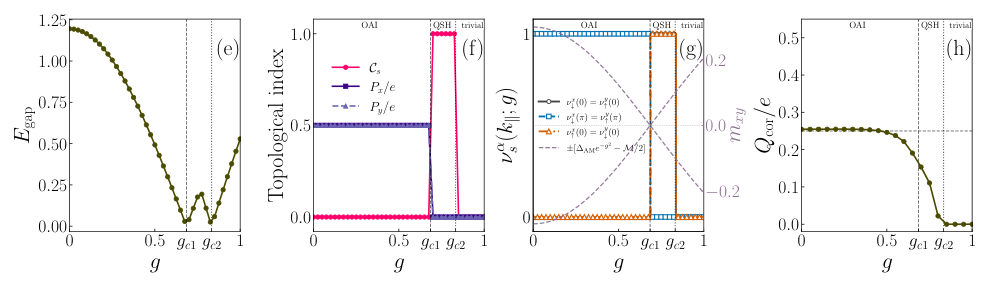
<figcaption class="paper-figure-caption"><b>Fig 4.</b> FIG. 4. Holstein EPC-dressed scenarios: open-boundary energy spectra for (a) ∆AM = 0.6, g = 0.6 and (c) ∆AM = 0.8, g = 0.8, with the insets showing the probability density ∣ψ∣2 of the in-gap states, evidencing the vanishing of corner localization of the OAI phase and the restoration of dispersive helical QSH edge modes in corresponding periodic-boundary edge spectra illustrated in (b) and (d), respectively. The lower panel, shown explicitly for ∆AM = 0.8, summarize the phonon-driven evolution with increasing g: (e) the bulk gap Egap, (f) the topological indices Cs and px,y/e, (g) the edge-slice invariant να s together with the boundary masses mxy, and (h) the corner charge Qcor,...</figcaption>
</figure>
<figure class="paper-figure-card">
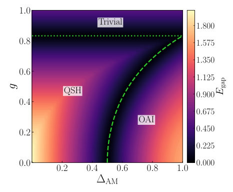
<figcaption class="paper-figure-caption"><b>Fig 5.</b> FIG. 5. Phase diagram in the (∆AM −g) plane for the EPC- dressed AM-BHZ model. The color contour represents the bulk gap Egap, while the phase boundaries originating from bulk-gap closings distinguish the OAI, QSH, and trivial insu- lating regimes, governed by Cs, px/y, and νx,y s .</figcaption>
</figure>
</div>

<p><strong>Summary.</strong> This theoretical study demonstrates that electron-phonon coupling (EPC) can act as a switch to control topological phases in altermagnets. By tuning the EPC strength, the system can transition from an Obstructed Atomic Insulator (OAI) back into a Quantum Spin Hall (QSH) state, offering a phonon-mediated route for spintronic device functionality.</p>
<p><strong>Why it may be interesting.</strong> This work provides a concrete theoretical framework for realizing tunable topological spintronics using lattice vibrations (phonons), which is highly relevant for understanding emergent quantum phenomena in solid-state materials.</p>
<details>
<summary>Detailed structure</summary>
<p><strong>Main problem.</strong> The study aims to demonstrate controllable switching between distinct topological insulating phases (OAI, QSH, trivial) in an altermagnet by tuning the electron-phonon coupling (EPC).</p>
<p><strong>Main result.</strong> EPC can weaken the altermagnetism-induced Obstructed Atomic Insulator (OAI) phase, thereby restoring the helical Quantum Spin Hall (QSH) edge modes, establishing a phonon-tuned spintronic control mechanism.</p>
<p><strong>Method.</strong> The authors employ theoretical modeling using effective Hamiltonians derived from the BHZ model, incorporating the Holstein EPC term via the Lang-Firsov transformation.</p>
<p><strong>Model / system.</strong> The system is a d-wave altermagnet embedded in a QSH insulator, modeled using a 4x4 BHZ TI Hamiltonian. The analysis tracks the evolution of topological invariants and edge states as the altermagnetic strength ($\Delta_{AM}$) and EPC strength ($g$) are varied.</p>
<p><strong>Key observables.</strong> Spin Chern number ($C_s$), total Chern number ($C_{	ext{tot}}$), bulk polarization ($\mathbf{p}$), quantized fractional corner charges ($Q_{	ext{cor}}$), and the presence/nature of edge states (helical vs. suspended).</p>
<p><strong>Important parameters / regimes.</strong> Altermagnetic strength ($\Delta_{AM}$), EPC coupling strength ($g$), and critical transition points ($\Delta_{	ext{AM}}^c$, $g_{c1}$, $g_{c2}$).</p>
<p><strong>Assumptions / limitations.</strong> The analysis relies on the Lang-Firsov transformation and projecting the system onto the zero-phonon sector, treating the system in the high-frequency anti-adiabatic limit.</p>
<p><strong>Figures summary.</strong> Figures illustrate the evolution of bulk and edge spectra across phase transitions, showing gap closing at critical $\Delta_{AM}$ values and the restoration of helical edge modes upon EPC inclusion.</p>
<p><strong>Paper structure.</strong> The paper systematically analyzes the topological phases (QSH $    o$ OAI $    o$ Trivial) as $\Delta_{AM}$ increases, then incorporates EPC to show how the system transitions back through a QSH-like state before becoming trivial.</p>
</details>
<details>
<summary>Abstract</summary>
<p>We theoretically demonstrate control over the interplay between obstructed atomic insulating and first-order topological phases via electron-phonon coupling (EPC) in a $d$-wave altermagnet (AM) that hosts nonrelativistic spin-split bands with zero net magnetization. By embedding a $d_{x^{2}-y^{2}}$-wave AM in a quantum spin Hall (QSH) insulator, we show that an altermagnetic order beyond a critical strength reconstructs the parent QSH state of a Bernevig-Hughes-Zhang (BHZ)-type topological insulator (TI) into an obstructed atomic insulator (OAI), characterized by nontrivial bulk polarization with quantized fractional corner charges, accompanied by characteristic in-gap boundary states, while the spin Chern number vanishes. Upon incorporating sufficiently strong EPC, the polaronic dressing reorganizes the Wannier centers and the associated effective edge topology, thereby weakening the altermagnetism-induced OAI phase and restoring the helical QSH edge modes. Further, EPC eventually drives the system into a trivial insulator. By uncovering a controllable switching mechanism between topologically distinct insulating phases in AMs, our study establishes a direct route toward phonon-tuned spintronic functionalities in unconventional magnetic platforms.</p>
</details>
<p><sub><a href="#top">↑ back to top</a></sub></p>

<p><a id="paper-2610.06449"></a></p>
<h3 id="exact-vortex-decomposition-of-the-shift-current"><a href="http://arxiv.org/abs/2610.06449v1">Exact vortex decomposition of the shift current</a></h3>
<p><strong>Authors:</strong> Matias Castro Schnaidt, Felipe Perez Riffo, Juan M. Florez, Eric Suarez Morell<br>
<strong>Type:</strong> theory · <strong>Category:</strong> other · <strong>PDF:</strong> <a href="https://arxiv.org/pdf/2610.06449v1">https://arxiv.org/pdf/2610.06449v1</a><br>
<strong>Analysis basis:</strong> full PDF text, analyzed in chunks
<strong>Topic relevance:</strong> <code>Keldysh / 2PI / non-Gaussian methods</code> <strong>1/5</strong></p>
<div class="figure-strip-hint">↔ Scroll figures horizontally</div>
<div class="paper-figures-scroll">
<figure class="paper-figure-card">
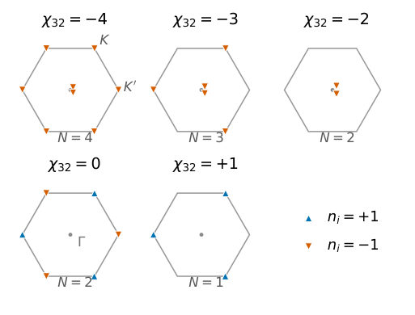
<figcaption class="paper-figure-caption"><b>Fig 1.</b> FIG. 2. Optical vortices of the y-polarised 3 ↔2 transition across the five phases, folded into the first Brillouin zone. Up- triangles carry ni = +1 and down-triangles ni = −1; corner charges are drawn at all three equivalent vertices, whereas Nvort counts them per unit cell. The charges sum to χ32 in every panel. χ32 = −2 is the only phase with no charge at a zone corner, and the corner charge reverses its winding between χ32 = −3 and χ32 = 0: these two facts, and not the value of χ32, are what the response follows.</figcaption>
</figure>
<figure class="paper-figure-card">
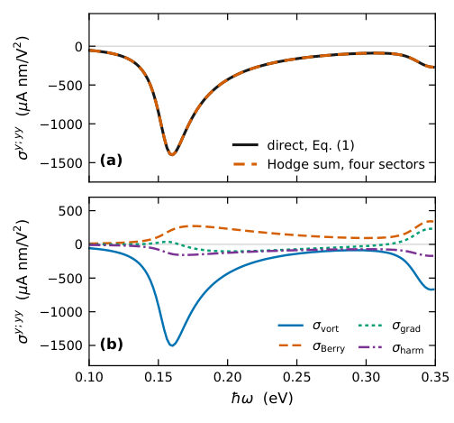
<figcaption class="paper-figure-caption"><b>Fig 2.</b> FIG. 1. Validation of the decomposition, shown for the χ32 = 0 phase, 2 ↔3 pair. (a) σy;yy(ω) obtained by two inde- pendent routes: the direct length-gauge integrand of Eq. (1) (solid) and the Hodge sum of Eq. (11) (dashed), which over- lay; in the Hodge sum ¯Ry is fixed by the additivity of the decomposition and checked against its direct zone average. (b) Each of the four sectors of Eq. (11). Grid N = 2000, broadening η = 10 meV.</figcaption>
</figure>
<figure class="paper-figure-card">
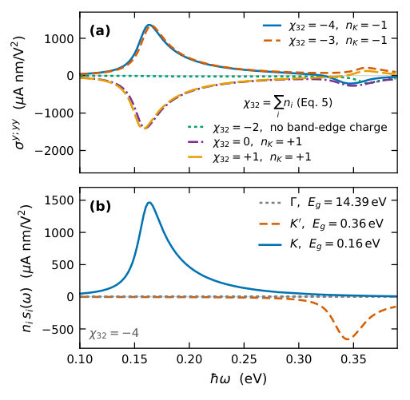
<figcaption class="paper-figure-caption"><b>Fig 3.</b> FIG. 3. (a) Total σy;yy(ω) of the 2 ↔3 pair for the five phases at the matched gap Eg ≃0.16 eV, labelled by the invariant χ32 and by the winding nK of the band-edge charge; phases with a positive peak are listed above the axis, those with a negative peak below. (b) Per-vortex breakdown of σvort for χ32 = −4, Eq. (16): the contribution nisi(ω) of each of the four charges (the two near Γ coincide), labelled by position and by the gap at that momentum.</figcaption>
</figure>
<figure class="paper-figure-card">
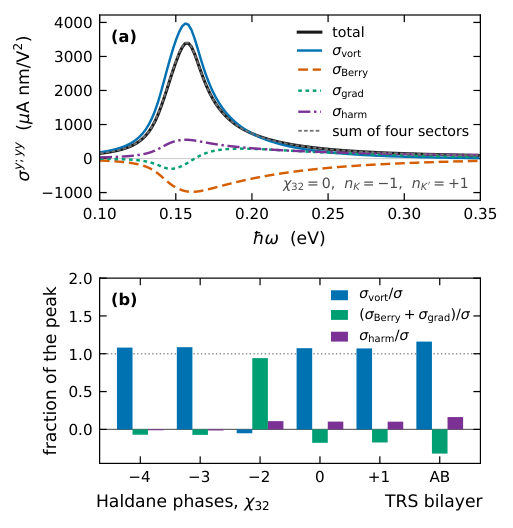
<figcaption class="paper-figure-caption"><b>Fig 4.</b> FIG. 4. (a) Hodge sectors of σy;yy(ω) of the 2 ↔3 pair for the time-reversal-symmetric AB bilayer with layer bias δ = 0.08 eV and γ3 = −0.38 eV (χ32 = 0), with the corner gap matched to that of Table I. (b) Fraction of σy;yy peak carried by each sector for the five Haldane phases of Table II and for the biased bilayer.</figcaption>
</figure>
<figure class="paper-figure-card">
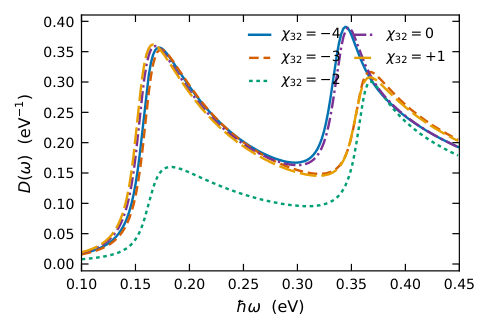
<figcaption class="paper-figure-caption"><b>Fig 5.</b> FIG. 5. Dipole weight D(ω) of Eq. (B5) for the 3 ↔2 tran- sition in the five phases (N = 2000, η = 10 meV). Each phase shows two onsets, one per valley, at its two band-edge gaps. At the peak of σy;yy the weight agrees to within one per cent in the four phases with a band-edge charge, whereas in χ32 = −2 it is about a third of that value at the matched gap and about a seventh smaller at its own peak near 0.36 eV; neither accounts for the two orders of magnitude by which its response at the matched gap falls short, so the drop is not an absorption effect. Above 0.39 eV, the onset of the next pair, the 2 ↔3 pair is no longer the full response.</figcaption>
</figure>
</div>

<p><strong>Summary.</strong> This theoretical work develops an exact four-sector decomposition for the shift conductivity, a measure of photocurrent, by analyzing the singular field structure of the shift vector on the Brillouin torus. It demonstrates that while global invariants like the Chern number are important, the local winding of charges at band edges dictates the sign and magnitude of the photocurrent. This provides a powerful framework for analyzing topological responses in 2D materials like graphene bilayers.</p>
<p><strong>Why it may be interesting.</strong> The rigorous mathematical decomposition of a physical response function (photocurrent) into geometrically distinct, quantifiable sectors (vortex, Berry, etc.) provides powerful tools for understanding topological responses in condensed matter systems.</p>
<details>
<summary>Detailed structure</summary>
<p><strong>Main problem.</strong> The paper aims to find an exact decomposition of the shift conductivity, a second-order photocurrent, based on the quantum geometry of Bloch bands.</p>
<p><strong>Main result.</strong> The shift conductivity is shown to have an exact four-sector decomposition, where the integer charge sector accounts for band-edge peaks, and the sign of the photocurrent is governed by the winding of a single charge rather than the global Chern number.</p>
<p><strong>Method.</strong> The core method involves inverting the curl relation for the shift vector field on the Brillouin torus using the Helmholtz–Hodge decomposition, splitting the conductivity into contributions from vortices, Berry curvature, and gradients.</p>
<p><strong>Model / system.</strong> The analysis is applied to two-band models, specifically using a graphene-Haldane bilayer and a time-reversal-symmetric biased AB bilayer Hamiltonian.</p>
<p><strong>Key observables.</strong> Shift conductivity ($\sigma_{a;bb}(\omega)$), shift vector ($\mathbf{R}$), interband Berry curvature ($\Omega_{cv}$), and quantized point charges ($n_i$).</p>
<p><strong>Important parameters / regimes.</strong> Frequency ($\omega$), Chern number ($\chi_{cv}$), and the warping parameter ($\gamma_3$).</p>
<p><strong>Assumptions / limitations.</strong> The analysis is restricted to a single pair of bands and one component, and it treats remote bands as virtual states.</p>
<p><strong>Figures summary.</strong> Figures illustrate the decomposition of $\sigma_{y;yy}(\omega)$ into four sectors, showing that the vortex sector ($\sigma_{vort}$) accounts for the entire band-edge peak, and demonstrate the linear and sign-reversing profile of the band-edge charge with warping.</p>
<p><strong>Paper structure.</strong> The paper establishes the mathematical decomposition identity using Hodge theory on the torus, applies this to physical models like graphene bilayers, and then analyzes the specific physical implications of the integer charge sector versus the global topological invariant (Chern number).</p>
</details>
<details>
<summary>Abstract</summary>
<p>Does any integer survive in the shift current, and does the Chern number control its sign? We show that the shift vector is a singular field on the Brillouin torus. Its curl has two sources: the interband Berry curvature and quantised point charges at the zeros of the transition dipole. Inverting this relation gives an exact decomposition of the shift conductivity, valid at every frequency, into one sector linear in the integer charges and three continuous sectors. As a testing ground, we take a graphene-Haldane bilayer: a model that lets us sweep the interband Chern number through five values at fixed gap to isolate its role. We also test the formalism against the time-reversal-symmetric biased AB bilayer. Whenever a charge sits at the band edge, and trigonal warping is present, the integer sector alone accounts for the band-edge peak. The relevant integer is not the Chern number but the winding of that single charge. Its sign, combined with a valley-dependent profile, sets the sign of the photocurrent. In these bilayers, sign reversals across topological transitions follow this winding; the invariant changes with it only when the same gap closing does both. A band-edge charge needs no invariant. It only requires that the two band-edge sublattices not be connected by the nearest-neighbour hopping, and trigonal warping makes it visible.</p>
</details>
<p><sub><a href="#top">↑ back to top</a></sub></p>

<p><a id="paper-2610.05443"></a></p>
<h3 id="new-dimensions-in-magnetism-and-superconductivity-via-3d-nanoprinting-with-focused-electron-and-ion-beams"><a href="http://arxiv.org/abs/2610.05443v1">New dimensions in magnetism and superconductivity via 3D nanoprinting with focused electron and ion beams</a></h3>
<p><strong>Authors:</strong> Claire Donnelly, Rosa Córdoba, Amalio Fernández-Pacheco<br>
<strong>Type:</strong> theory · <strong>Category:</strong> other · <strong>PDF:</strong> <a href="https://arxiv.org/pdf/2610.05443v1">https://arxiv.org/pdf/2610.05443v1</a><br>
<strong>Analysis basis:</strong> full PDF text, analyzed in chunks
<strong>Topic relevance:</strong> <code>analog quantum simulation</code> <strong>1/5</strong></p>
<div class="figure-strip-hint">↔ Scroll figures horizontally</div>
<div class="paper-figures-scroll">
<figure class="paper-figure-card">
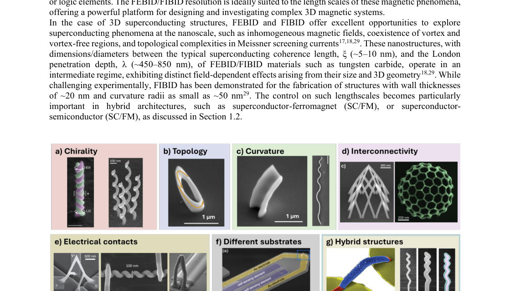
<figcaption class="paper-figure-caption"><b>Fig 1.</b> Figure 2. Variety of nanostructure architectures achievable with FEBID/FIBID 3D nanoprinting. With the nanostructures designed with CAD software, it is possible to create a wide variety of geometries, including the definition of a) chiral, b) topologically non-trivial, c) curved and d) interconnected architectures. As direct-write techniques, FEBID/FIBID nanoprinting can be used to directly integrate functional nanostructures into e) electrical contacts, as well as f) patterning directly onto a variety of substrates. Finally, the combination with postprocessing techniques such as chemical vapour deposition and electrodeposition allows for the realisation of hybrid structures. a) reproduced...</figcaption>
</figure>
<figure class="paper-figure-card">
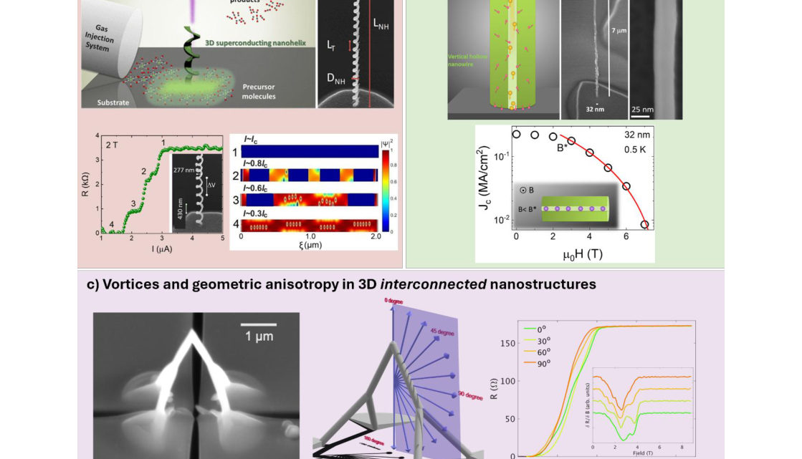
<figcaption class="paper-figure-caption"><b>Fig 2.</b> Figure 3. Physics of 3D superconducting nanostructures. a) In superconducting nanohelices, the presence of phase slips that occur due to the inhomogeneous component of the applied field parallel to the nanowire surface is detected via transport measurements, and confirmed with time dependent Ginzburg Landau simulations. b) In superconducting hollow nanocylinders, the presence of a ~6 nm-diameter hole at the centre of the standing cylinder, arising from the balance between milling and deposition processes, leads to a characteristic crossover in Jc(B) revealed by transport measurements. Below B*, the behaviour of Jc is governed by the strong confinement potential of a single row of vortices...</figcaption>
</figure>
<figure class="paper-figure-card">

<figcaption class="paper-figure-caption"><b>Fig 3.</b> Figure 4. Physics of 3D magnetic nanostructures. a) the patterning of a magnetic double helix with FEBID results in a chiral domain wall forming at the intersect between the two helices, with the chirality determined by the patterned geometric chirality. b) the introduction of curvature into a cylindrical magnetic nanowire modulates the energy landscape of Bloch point domain walls, with regions of high curvature acting as energy barriers for Bloch-point domain wall motion within the nanostructure. c) The definition of interconnected nanowires results in the presence of topologically non-trivial magnetic textures at the vertices. a) reproduced from 30. b) reproduced from 28. c) reproduced...</figcaption>
</figure>
</div>

<p><strong>Summary.</strong> This review surveys the use of 3D nanopatterning techniques, specifically FEBID and FIBID, to create complex nanostructures from superconducting and magnetic materials. It details how controlling the geometry—such as introducing chirality or curvature—allows researchers to access and study emergent physical phenomena that are inaccessible in bulk samples. The work highlights the potential of these methods for next-generation quantum device prototyping.</p>
<p><strong>Why it may be interesting.</strong> The ability to engineer geometry at the nanoscale allows for the controlled study of topological and curvature-induced effects in quantum materials, which is highly relevant for understanding emergent quantum phenomena.</p>
<details>
<summary>Detailed structure</summary>
<p><strong>Main problem.</strong> The paper addresses the challenge of extending quantum materials into the third dimension (3D) to geometrically tune emergent properties beyond those found in bulk materials.</p>
<p><strong>Main result.</strong> Focused electron and ion beam induced deposition (FEBID/FIBID) are powerful techniques enabling the realization of complex 3D nanostructures for studying emergent magnetic and superconducting phenomena.</p>
<p><strong>Method.</strong> The review discusses the capabilities and underlying mechanisms of 3D nanopatterning using FEBID and FIBID, which allow for direct writing of functional materials.</p>
<p><strong>Model / system.</strong> The physical systems studied are superconducting and magnetic materials patterned into complex 3D nanostructures, allowing control over chirality, curvature, and topology.</p>
<p><strong>Key observables.</strong> Magnetization structures (e.g., domain walls, vortices), persistent currents, and superconducting screening currents.</p>
<p><strong>Important parameters / regimes.</strong> The study operates in an intermediate regime between the superconducting coherence length ($\xi \sim 5-10 	ext{ nm}$) and the London penetration depth ($\lambda \sim 450-850 	ext{ nm}$); resolution is key, down to the few nanometers.</p>
<p><strong>Assumptions / limitations.</strong> The primary limitation noted is the experimental challenge of maintaining fidelity and achieving uniform properties in highly complex, sub-100 nm 3D geometries.</p>
<p><strong>Figures summary.</strong> Figures illustrate the variety of 3D nanostructure architectures achievable via FEBID/FIBID, including chiral, curved, and topologically non-trivial designs.</p>
<p><strong>Paper structure.</strong> The review systematically discusses the necessity of 3D patterning, details the capabilities of FEBID/FIBID, and then analyzes the specific emergent effects observed in magnetic (e.g., domain walls) and superconducting (e.g., Meissner currents) nanostructures based on geometry.</p>
</details>
<details>
<summary>Abstract</summary>
<p>The extension of nanoscale quantum materials to the third dimension brings new possibilities to geometrically tune emergent properties, emulating or indeed going beyond the physics of bulk materials, with exciting implications for high-density technological integration. Realising such three-dimensional architectures requires nanofabrication techniques that not only enable complex 3D geometries, but also deliver functional quantum materials with emergent phenomena. Recent advances in focused electron- and ion-beam induced deposition (FEBID and FIBID) have made 3D nanopatterning of functional materials in complex geometries increasingly feasible, paving the way for the experimental realisation of new phenomena and device prototyping. In this review, we discuss the use of FEBID and FIBID 3D nanopatterning of superconducting and magnetic materials. We address the underlying mechanisms, and capabilities of these techniques, focusing on the physical phenomena that become accessible. Considering the resolution of the techniques in the context of the fundamental lengthscales of the materials, we discuss the emergent effects that arise due to three dimensional geometries in magnetic and superconducting nanostructures, and highlight perspectives for future developments of the techniques.</p>
</details>
<p><sub><a href="#top">↑ back to top</a></sub></p>

<p><a id="paper-2610.05468"></a></p>
<h3 id="soliton-dynamics-in-the-gardner-ostrovsky-equation"><a href="http://arxiv.org/abs/2610.05468v1">Soliton dynamics in the Gardner-Ostrovsky equation</a></h3>
<p><strong>Authors:</strong> R. Fariello, M. S. Soares, Y. A. Stepanyants<br>
<strong>Type:</strong> theory · <strong>Category:</strong> other · <strong>PDF:</strong> <a href="https://arxiv.org/pdf/2610.05468v1">https://arxiv.org/pdf/2610.05468v1</a><br>
<strong>Analysis basis:</strong> full PDF text, analyzed in chunks
<strong>Topic relevance:</strong> <code>analog quantum simulation</code> <strong>1/5</strong></p>
<div class="figure-strip-hint">↔ Scroll figures horizontally</div>
<div class="paper-figures-scroll">
<figure class="paper-figure-card">

<figcaption class="paper-figure-caption"><b>Fig 1.</b> Fig. 1 (colour online). The dispersion dependence of the wave frequency on the wave number for the normalised GO equation (1.1) with c = 100 and  = 1. Line 1 pertains to the positive (“anomalous”) dispersion case with  = 1, and line 2 − to the negative (“normal”) dispersion case with  = −1. The diagonal dashed line shows the dispersionless dependence  = ck, where c = 100.</figcaption>
</figure>
<figure class="paper-figure-card">

<figcaption class="paper-figure-caption"><b>Fig 2.</b> Fig. 2 (colour online). Dependences of the phase (left panel) and group (right panel) velocities on the wave number for different signs of the small-scale dispersion β. Lines 1 pertain to the positive</figcaption>
</figure>
<figure class="paper-figure-card">

<figcaption class="paper-figure-caption"><b>Fig 3.</b> Fig. 3 (colour online). The numerically obtained dependences of soliton amplitude A on speed V within the dimensionless GO equation (2.1) with different coefficients . The critical soliton speed Vc =  corresponds to the minimal phase speed within the normalised Eq. (2.1). The shape and amplitude of a solitary wave, if it exists, depend on two parameters, the wave speed</figcaption>
</figure>
<figure class="paper-figure-card">

<figcaption class="paper-figure-caption"><b>Fig 4.</b> Figure 4 Figure 5 Fig. 4 (colour online). Soliton shapes for different speeds V and fixed value of  = −1. Fig. 5 (colour online). Bi-solitons − stationary bound states of two solitons. A single soliton with a nonmonotonic profile at V =  is shown in the upper frame; in the subsequent frames one can see a family of stationary bi-solitons with the same speed.</figcaption>
</figure>
<figure class="paper-figure-card">

<figcaption class="paper-figure-caption"><b>Fig 5.</b> Fig. 6. Evolution of soliton-like initial pulse with the multiplication factor F = 1.2.</figcaption>
</figure>
</div>

<p><strong>Summary.</strong> This paper analyzes soliton dynamics in the non-integrable Gardner-Ostrovsky equation, which models wave propagation in dispersive media. Through numerical simulations, the authors demonstrate that soliton interactions are inelastic, causing energy to transfer from smaller solitons to a single, dominant 'soliton-champion.' This highlights a fundamental energy redistribution mechanism in this non-integrable physical model.</p>
<p><strong>Why it may be interesting.</strong> While focused on classical nonlinear PDEs, the concept of energy absorption and the emergence of a dominant structure from complex, interacting localized excitations shares conceptual parallels with energy transfer mechanisms studied in open quantum systems or nonlinear wave phenomena in quantum optics.</p>
<details>
<summary>Detailed structure</summary>
<p><strong>Main problem.</strong> The study investigates the formation and complex, inelastic interactions of solitons within the non-integrable Gardner-Ostrovsky (GO) equation.</p>
<p><strong>Main result.</strong> Soliton interactions are inherently inelastic, leading to a 'soliton-champion' effect where the largest-amplitude soliton absorbs energy from smaller ones. The GO equation models wave dynamics in dispersive media.</p>
<p><strong>Method.</strong> The research employs numerical methods, including the Petviashvili method, to construct and simulate soliton solutions and their subsequent interactions.</p>
<p><strong>Model / system.</strong> The system is governed by the Gardner-Ostrovsky equation, a generalization of the Gardner equation incorporating cubic nonlinearity and rotational dispersion, relevant to plasmas and oceanic internal waves.</p>
<p><strong>Key observables.</strong> Soliton amplitude, velocity, energy transfer, and the existence of stationary bound states (bi-solitons).</p>
<p><strong>Important parameters / regimes.</strong> The dispersion regime requires anomalous (positive) dispersion ($eta > 0$), and the interaction dynamics depend on the nonlinear coefficient ($\delta$).</p>
<p><strong>Assumptions / limitations.</strong> The analysis assumes small amplitudes for linear properties and that the GO equation is non-integrable, which dictates the inelastic nature of the interactions.</p>
<p><strong>Figures summary.</strong> Figures illustrate the dispersion relation, soliton amplitude vs. speed, soliton shapes, and time evolution of pulse amplitudes during head-on collisions and interactions with bi-solitons.</p>
<p><strong>Paper structure.</strong> The paper progresses from linear analysis and numerical construction of solitons to detailed simulations of multi-soliton interactions, culminating in the demonstration of the energy-transferring 'soliton-champion' effect.</p>
</details>
<details>
<summary>Abstract</summary>
<p>We investigate soliton formation and interactions in the non-integrable Gardner-Ostrovsky equation (alias the rotation-modified Gardner equation) with anomalous (positive) dispersion. This equation is relevant to the description of wave dynamics in plasmas and other dispersive media. We show that a special class of solitons, characterized by zero total mass and non-monotonic asymptotics, can emerge from pulse-like initial perturbations. Depending on the initial conditions, these solitons may form regular amplitude-ordered trains, irregular nonstationary ensembles of interacting localized structures, or stationary propagating multi-soliton complexes. We further demonstrate that soliton interactions in the Gardner-Ostrovsky equation are inherently inelastic, leading to the emergence of a dominant "soliton-champion" in closed systems. For example, under periodic boundary conditions, only the largest-amplitude soliton ultimately survives, while all smaller solitons are gradually eliminated through successive interactions. Despite their inelastic interactions, Gardner-Ostrovsky solitons exhibit remarkable robustness.</p>
</details>
<p><sub><a href="#top">↑ back to top</a></sub></p>

<p><a id="paper-2610.04618"></a></p>
<h3 id="spatiotemporal-imaging-of-microwave-magnetic-fields-via-magnonic-coherent-splitting"><a href="http://arxiv.org/abs/2610.04618v1">Spatiotemporal imaging of microwave magnetic fields via magnonic coherent splitting</a></h3>
<p><strong>Authors:</strong> C. K. Wei, Z. J. Chen, J. T. Song, S. H. Ma, W. H. Liu, J. H. Wu, Z. W. Huang, Jinwei Rao, Wei Lu, Bimu Yao<br>
<strong>Type:</strong> experiment · <strong>Category:</strong> other · <strong>PDF:</strong> <a href="https://arxiv.org/pdf/2610.04618v1">https://arxiv.org/pdf/2610.04618v1</a><br>
<strong>Analysis basis:</strong> full PDF text, analyzed in chunks
<strong>Topic relevance:</strong> <code>quantum measurements</code> <strong>1/5</strong></p>
<div class="figure-strip-hint">↔ Scroll figures horizontally</div>
<div class="paper-figures-scroll">
<figure class="paper-figure-card">

<figcaption class="paper-figure-caption"><b>Fig 1.</b> FIG. 1. Field-to-splitting transduction for spatiotem- poral microwave magnetic-field imaging. a, A target microwave magnetic field B excites a PIM |p⟩in a 1-mm- diameter YIG sphere. The PIM couples coherently to a Walker mode (WM, |m⟩) and produces the hybrid modes |−⟩ and |+⟩whose on-resonance separation approaches 2g, where g is the PIM–WM coupling strength. It allows the target- field amplitude B to be quantitatively reconstructed from spectral fitting. b, Calibration of the field-to-splitting rela- tion. A DC bias field BDC sets the WM resonance, the target field excites the PIM, and a weak probe reads out the trans- mission amplitude |S21|. Increasing B increases the hybrid- mode...</figcaption>
</figure>
<figure class="paper-figure-card">

<figcaption class="paper-figure-caption"><b>Fig 2.</b> FIG. 2. Continuous-wave sensitivity and interferomet- ric phase readout of the microwave magnetic-field sensor. a, Weak-probe transmission spectra at target-field amplitudes B = 240 nT and 302 nT, showing the field- dependent separation of the hybrid modes. Symbols and solid lines represent measurements and fits. b, Frequency deriva- tive of the high-frequency hybrid branch |+⟩at B = 240 nT. The fixed readout frequency fmeas is selected at the maximum of d|S21|/dωp. c, Magnetic-field sensitivity at the operating field B = 240 nT as a function of Fourier frequency. The dashed line marks the sensitivity in the white-noise region, 58 pT/ √</figcaption>
</figure>
<figure class="paper-figure-card">

<figcaption class="paper-figure-caption"><b>Fig 3.</b> FIG. 3. Steady-state and time-resolved imaging of microwave magnetic fields above a CPW. a, Steady-state scanning configuration. A PIM-based probe, biased by a permanent magnet along z to set its WM resonance, is scanned above an open-ended CPW driven by a continuous-wave tone near 3 GHz, producing a standing-wave target field. b-d, Field maps at a probe height of 2 mm: measured magnetic-field amplitude (b), simulated magnetic-field amplitude |By| (c) and simulated electric-field amplitude |Ey| (d). e, Line cuts from panels b-d at 0.5 mm from the CPW centre line. The measured profile follows the simulated magnetic-field distribution and is spatially offset from the electric-field profile....</figcaption>
</figure>
<figure class="paper-figure-card">

<figcaption class="paper-figure-caption"><b>Fig 4.</b> FIG. 4. Spatiotemporal microwave magnetic-field imaging of an operating RF amplifier. a, Commercial RF amplifier and scanned region. A continuous RF tone is applied at the input, while a pulsed control voltage between input- bias terminal (VIN) and ground (GND) switches the amplifier gain. P1 and P2 denote probe positions near the input and output sides, respectively. b, Time-resolved magnetic-field maps measured at delays of 1, 4, 15 and 20 µs. c, Normalized control-voltage, RF output-voltage and target magnetic-field traces measured at P2. The target magnetic field follows the RF output envelope and exhibits 10–90% rise and 90–10% fall times of 9.5 µs and 3.5 µs, respectively. d,...</figcaption>
</figure>
</div>

<p><strong>Summary.</strong> The authors present a novel, all-microwave technique using magnonic coherent splitting in YIG to image microwave magnetic fields. By measuring the spectral splitting between two magnon modes, they achieve high sensitivity and temporal resolution for mapping magnetic field distributions. This method proves valuable for non-destructive diagnostics of high-frequency circuits and spintronic devices.</p>
<p><strong>Why it may be interesting.</strong> This work demonstrates a novel, all-microwave sensing modality for magnetic fields in functional devices, providing a powerful tool for characterizing high-frequency dynamics without relying on optics.</p>
<details>
<summary>Detailed structure</summary>
<p><strong>Main problem.</strong> The goal is to develop a room-temperature, optics-free method for spatiotemporal imaging of microwave magnetic fields, which is crucial for diagnosing high-frequency circuits and studying nonequilibrium spin dynamics.</p>
<p><strong>Main result.</strong> The technique successfully reconstructs microwave magnetic fields across position and time, demonstrating high sensitivity (58 pT/sqrt(Hz)) and resolving dynamic events like switching and faults in RF amplifiers.</p>
<p><strong>Method.</strong> The method utilizes magnonic coherent splitting in YIG, where the target magnetic field amplitude is transduced into a measurable spectral splitting via coupling between a pump-induced magnon mode and a Walker mode.</p>
<p><strong>Model / system.</strong> The physical system is Yttrium iron garnet (YIG) exhibiting ferrimagnetic order. The mechanism relies on the coherent coupling between a pump-induced magnon mode (PIM) and a Walker mode (WM), providing a calibrated relationship between the field and the spectral splitting.</p>
<p><strong>Key observables.</strong> Spectral splitting magnitude (related to field amplitude $B$), phase ($\phi$), and time-resolved field evolution $B(r, 	au)$.</p>
<p><strong>Important parameters / regimes.</strong> Sensitivity of 58 pT/sqrt(Hz); time resolution of 130-ns; operating at room temperature.</p>
<p><strong>Assumptions / limitations.</strong> The method assumes the PIM–WM coupling strength provides a reliable, calibrated link to the magnetic field amplitude $B$.</p>
<p><strong>Figures summary.</strong> Figures illustrate the field-to-splitting transduction mechanism, calibration curves showing $g(B)$ vs. $B$, and protocols for both spatial and time-resolved imaging.</p>
<p><strong>Paper structure.</strong> The paper details the theoretical basis of the coherent splitting, presents the experimental setup for spatial and temporal mapping, validates the magnetic selectivity against electric field measurements, and applies the technique to diagnose faults in an RF amplifier.</p>
</details>
<details>
<summary>Abstract</summary>
<p>Spatiotemporal microwave magnetic-field imaging reveals current flow in high-frequency circuits and nonequilibrium spin dynamics, yet probes rarely combine calibrated spectral readout, optics-free operation and transient mapping at room temperature. Here ferrimagnetic order in yttrium iron garnet supports coherent coupling from a pump-induced magnon mode, converting target-field amplitude into a spectral splitting with all-microwave readout. Sampling the calibrated splitting over position and delay reconstructs spatiotemporal imaging of magnetic fields. Continuous-wave measurement reaches a sensitivity of 58 pT/$\sqrt{\mathrm{Hz}}$ and recovers phases across various powers. Combined with time-resolved frequency-comb spectroscopy, the method reconstructs transient fields with a 130-ns response time. Coplanar-waveguide imaging validates the magnetic selectivity of the mode-splitting readout, where measured maps agree with simulated magnetic-field distribution. In a microwave amplifier, our reconstruction resolves nonuniform switching dynamics and detects downstream field suppression from an open-contact fault. Magnonic coherent splitting provides a scalable route for optics-free imaging of spatiotemporal field evolution in functional devices.</p>
</details>
<p><sub><a href="#top">↑ back to top</a></sub></p>

<p><a id="paper-2610.05433"></a></p>
<h3 id="surface-pinned-nonsingular-topologically-charged-defects-in-nanoplasmonics"><a href="http://arxiv.org/abs/2610.05433v1">Surface-pinned nonsingular topologically charged defects in nanoplasmonics</a></h3>
<p><strong>Authors:</strong> Michael I. Tribelsky, Vladimir V. Ternovski<br>
<strong>Type:</strong> theory · <strong>Category:</strong> other · <strong>PDF:</strong> <a href="https://arxiv.org/pdf/2610.05433v1">https://arxiv.org/pdf/2610.05433v1</a><br>
<strong>Analysis basis:</strong> full PDF text, analyzed in chunks
<strong>Topic relevance:</strong> <code>interference shaping light</code> <strong>1/5</strong></p>
<div class="figure-strip-hint">↔ Scroll figures horizontally</div>
<div class="paper-figures-scroll">
<figure class="paper-figure-card">

<figcaption class="paper-figure-caption"><b>Fig 1.</b> FIG. 1. Schematic field lines near an SD: Re E [(a),(b)] and S [(c),(d)]. White and gray colors denote ε = 1 and Re ε &lt; 0 respectively. Diamonds/circles mark w = +1 (quasi-nodes for Re E and quasi-centers/foci for S); crosses mark w = −1 (quasi-saddles for both Re E and S).</figcaption>
</figure>
<figure class="paper-figure-card">

<figcaption class="paper-figure-caption"><b>Fig 2.</b> FIG. 2. Charge-conserving annihilation involving bulk sad- dles (crosses) with SDs in exact Mie solution for scattering of H(z)-polarized wave by lossless cylinder; normal incidence; ϕ0 = 0; kR = 0.3. The arrow shows the incident wave vec- tor k; the shaded region is the cylinder. The cylinder axis passes through the origin of the coordinate system. (a) For Re E at ε ≈−1.009. Two bulk saddles (w = −1) and two SDs (quasi-nodes with w = +1) give zero total charge. (b) At ε ≈−1.008 they merge into a w = 0 state (star). (c) For S at ε ≈−0.982, two bulk saddles and two SDs (quasi-centers with w = +1) are present. (d) They merge at ε ≈−0.973. Beyond the bifurcations the displayed regions are...</figcaption>
</figure>
<figure class="paper-figure-card">

<figcaption class="paper-figure-caption"><b>Fig 3.</b> FIG. 3. Distinct one-sided maxima of |S| near an SD of an aluminum nanowire. Exact Mie solution: R = 50 nm, λ = 121.25 nm, and ε = −1.144 + 0.098i. The angular sepa- ration 0.558◦corresponds to 0.487 nm.</figcaption>
</figure>
<figure class="paper-figure-card">

<figcaption class="paper-figure-caption"><b>Fig 4.</b> FIG. 4. Surface-defect winding-number maps for the Poynting field in scattering of H(z)-polarized wave by a nanowire. Exact Mie solution. Im ε = 0. (a) W + SD, (b) W − SD, (c) WSD = W + SD + W − SD. Because |w| = 1 for the SD, |W ± SD| counts the number of defects of each sign. All multipole resonances accumulate at ε′ = −1 (dashed line) as kR →0. See text and Supplemental Material 2 [22].</figcaption>
</figure>
</div>

<p><strong>Summary.</strong> This theoretical work characterizes surface-pinned, topologically charged defects in light scattering from plasmonic nanostructures. The defects are purely topological, arising from boundary conditions, and their existence is confirmed through charge-conserving bifurcations. The study highlights that these defects are robust features of the electromagnetic field structure, independent of surface energy models.</p>
<p><strong>Why it may be interesting.</strong> The rigorous topological classification of field structures in plasmonics provides a powerful, geometry-independent diagnostic tool for understanding light-matter interactions at interfaces, which has implications for designing advanced optical components.</p>
<details>
<summary>Detailed structure</summary>
<p><strong>Main problem.</strong> The paper investigates the existence and properties of surface-pinned, topologically charged, nonsingular defects (SDs) that arise in light scattering from plasmonic objects.</p>
<p><strong>Main result.</strong> These defects are purely topological, dictated by Maxwell boundary conditions, and are found in the electric and Poynting vector fields for H(z) polarization, demonstrating topological charge conservation during field bifurcations.</p>
<p><strong>Method.</strong> The analysis uses exact solutions for light scattering (e.g., for a cylinder) and defines the topological charge via the winding number calculated from one-sided traces of the field components at the material interface.</p>
<p><strong>Model / system.</strong> The study models light scattering from a plasmonic object, specifically analyzed in (quasi) 2D at optical frequencies, using the framework of Maxwell's equations.</p>
<p><strong>Key observables.</strong> The local and global winding numbers ($w_E, w_S$), the field patterns in the E and Poynting vector fields, and the evolution of defect domains in parameter space.</p>
<p><strong>Important parameters / regimes.</strong> Optical frequencies, dissipation ($\varepsilon''$), and the material permittivity ($\varepsilon'$).</p>
<p><strong>Assumptions / limitations.</strong> The analysis is simplified to 2D scattering by an infinite cylinder, and the topological charge is defined by regularizing the sharp boundary interface.</p>
<p><strong>Figures summary.</strong> Figures illustrate schematic field lines near an SD, charge-conserving annihilation processes involving bulk saddles and SDs, and maps showing domains of different SD winding numbers in the parameter space.</p>
<p><strong>Paper structure.</strong> The paper establishes the theoretical basis for SDs from Maxwell's equations, demonstrates their existence and properties using exact solutions (e.g., for a cylinder), analyzes the topological charge conservation through bifurcations, and examines the effect of dissipation on these structures.</p>
</details>
<details>
<summary>Abstract</summary>
<p>We discuss surface-pinned, topologically charged, nonsingular defects (SD) in light scattering by a plasmonic object. They follow from exact Maxwell boundary conditions and are purely topological---unaffected by surface forces. At optical frequencies, in (quasi) 2D, they appear in the electric and Poynting vector fields for $H^{(z)}$ polarization, not for $E^{(z)}$. Exact solutions for a circular cylinder reveal topological charge-conserving bifurcations involving SDs with bulk singularities or SDs alone, and contraction of defect regions under loss.</p>
</details>
<p><sub><a href="#top">↑ back to top</a></sub></p>

<p><a id="paper-2610.05620"></a></p>
<h3 id="terahertz-nanoscopy-of-quantum-geometric-photovoltaics-in-bilayer-graphene"><a href="http://arxiv.org/abs/2610.05620v1">Terahertz nanoscopy of quantum-geometric photovoltaics in bilayer graphene</a></h3>
<p><strong>Authors:</strong> Bogdan Borodin, Jiangxu Li, Xuanpu Zhang, Aleksei Karaborchev, Som Subhra Guria, Kenji Watanabe, Takashi Taniguchi, Roshan Krishna Kumar, Fan Zhang, Petr Stepanov<br>
<strong>Type:</strong> experiment · <strong>Category:</strong> other · <strong>PDF:</strong> <a href="https://arxiv.org/pdf/2610.05620v1">https://arxiv.org/pdf/2610.05620v1</a><br>
<strong>Analysis basis:</strong> full PDF text, analyzed in chunks
<strong>Topic relevance:</strong> <code>quantum measurements</code> <strong>1/5</strong></p>
<div class="figure-strip-hint">↔ Scroll figures horizontally</div>
<div class="paper-figures-scroll">
<figure class="paper-figure-card">

<figcaption class="paper-figure-caption"><b>Fig 1.</b> Figure 1: Terahertz response of dual-gated AB-stacked bilayer graphene. a, Schematic of the device and far-field THz measurement. The bilayer graphene is encapsulated by hBN and controlled by top and bottom gates. The THz beam has a frequency of 2.52 THz (ℏω = 10.5 meV) and a spot size of approximately 0.5 mm. The inset shows the device cross section. b, Calculated low-energy band structure of bilayer graphene at interlayer potential difference ∆= 10.3 meV. Black contours indicate resonant states satisfying Ec(k) −Ev(k) = 10.5 meV. Red and blue dots mark the conduction-band minima and valence-band maxima, respectively. c, Calculated shift-current conductivity σyyy under 10.5 meV excitation....</figcaption>
</figure>
<figure class="paper-figure-card">

<figcaption class="paper-figure-caption"><b>Fig 2.</b> Figure 2: Near-field measurements of quantum-geometric bulk photovoltaic effect at 12 K under 10.5 meV (2.52 THz) illumination. a, AFM topography of the device and schematic of the near-field photocurrent measurement. b, Power-normalized local photovoltage amplitude as a function of displacement field D and carrier density n, measured 10 µm away from the contacts (red diamond in panel a). The white dashed vertical line shows the position of CNP extracted directly from Rxx measurements. Insets show the calculated band structures at the (n, D) points indicated by the arrows. c, Spatial maps of the local photovoltage measured at the four (n, D) points indicated by the colored circles in panel...</figcaption>
</figure>
<figure class="paper-figure-card">

<figcaption class="paper-figure-caption"><b>Fig 3.</b> Figure 3: Polarization dependence of local quantum-geometric bulk photovoltaic effect. a, Left: schematic of shift-current generation in bilayer graphene and measurement by s-SNOM. Upper right: Mx mirror, shift vector R along y, and incident electric field E. Lower right: Shift current Imeasured as a function of the incident linear polarization angle θ. b, Polarization-dependent, power-normalized photovoltage measured in the bulk of the device at temperatures between 40 and 12 K. The solid lines show the theoretically expected dependencies, VBPVE ∝cos(2θ − ϕ). c, Temperature evolution of the polarization-dependent, power-normalized photovoltage. d, Dependence of the photovoltage amplitude...</figcaption>
</figure>
<figure class="paper-figure-card">

<figcaption class="paper-figure-caption"><b>Fig 4.</b> Figure 3d shows the power dependence of the observed BPVE. The black symbols denote the photovoltage am- plitude, which increases nearly linearly with excitation power, as expected for a second-order nonlinear effect. The red symbols denote the power-normalized photovolt- age amplitude. Although this quantity would be expected to remain constant, we observe a weak decrease with in- creasing excitation power. We attribute this deviation to photo-induced electron heating. The strong near-field enhancement at the s-SNOM tip, which can amplify the local electric field by a factor of 10–100, can induce lo- cal electron heating even at low incident powers. As the incident power increases, so does...</figcaption>
</figure>
</div>

<p><strong>Summary.</strong> This work pioneers the use of cryogenic, polarization-sensitive terahertz nanoscopy to measure the Bulk Photovoltaic Effect (BPVE) in bilayer graphene. By employing near-field techniques, the authors successfully disentangle the intrinsic quantum-geometric photovoltaic signal from background photothermoelectric noise. This provides an optical lens into the fundamental interplay between band structure and quantum geometry in advanced 2D materials.</p>
<p><strong>Why it may be interesting.</strong> The ability to optically probe quantum geometric effects like the BPVE at the nanoscale using THz spectroscopy provides a powerful, non-equilibrium tool for characterizing band structure and symmetry in 2D materials.</p>
<details>
<summary>Detailed structure</summary>
<p><strong>Main problem.</strong> To develop a technique to spatially and spectroscopically separate the intrinsic Bulk Photovoltaic Effect (BPVE) from confounding contact- and interface-induced photothermoelectric signals.</p>
<p><strong>Main result.</strong> The study successfully demonstrated the nanoscale mapping of the BPVE in bilayer graphene, confirming its dependence on quantum geometry and revealing signatures of electronic structure details like trigonal warping.</p>
<p><strong>Method.</strong> The authors employed cryogenic, polarization-sensitive terahertz microscopy, specifically utilizing near-field scanning optical microscopy (s-SNOM) to achieve deep-subwavelength spatial resolution.</p>
<p><strong>Model / system.</strong> The physical system is dual-gated AB bilayer graphene, whose electronic properties are governed by quantum geometry, linking the BPVE to nonlinear light-matter interactions.</p>
<p><strong>Key observables.</strong> Spatially resolved local photovoltage amplitude ($V_{ph}$), polarization-dependent photovoltage ($\propto \cos(2	heta - \phi)$), and the evolution of BPVE with carrier density ($n$) and displacement field ($D$).</p>
<p><strong>Important parameters / regimes.</strong> Terahertz photon energy ($\hbar\omega \approx 10.5 	ext{ meV}$), cryogenic temperature ($12 	ext{ K}$), and the characteristic twofold angular symmetry.</p>
<p><strong>Assumptions / limitations.</strong> The analysis relies on separating the intrinsic bulk response from extrinsic contributions, which is achieved by modeling the polarization dependence using an extraction anisotropy function.</p>
<p><strong>Figures summary.</strong> Figures show the device architecture and far-field THz measurements, followed by near-field maps showing photovoltage vs. (n, D), and polarization dependence plots illustrating the separation of PTE, detected BPVE, and reconstructed intrinsic BPVE.</p>
<p><strong>Paper structure.</strong> The paper progresses from establishing the need for advanced measurement techniques (far-field limitations) to implementing near-field s-SNOM measurements. It then details the rigorous polarization-resolved analysis to mathematically decompose the total signal into its intrinsic BPVE, PTE, and geometric coupling components.</p>
</details>
<details>
<summary>Abstract</summary>
<p>The bulk photovoltaic effect (BPVE) provides a direct link between quantum geometry and nonlinear light-matter interactions, yet conventional far-field measurements cannot disentangle BPVE from contact- and interface-induced photothermoelectric signals. Here we develop cryogenic, polarization-sensitive terahertz microscopy with deep-subwavelength resolution and apply it to dual-gated AB bilayer graphene. Near resonance between the band gap and terahertz photon energy, we observe enhanced optical conductivity and spatially resolved BPVE. Polarization-dependent measurements reveal a characteristic twofold angular symmetry and a distinct shift-vector direction, both governed by crystalline symmetries and quantum geometry. The evolution of BPVE with carrier density and temperature provides a sensitive probe of the fine electronic structure of bilayer graphene, revealing signatures of trigonal warping and electron-hole asymmetry. Agreement with theory demonstrates that the terahertz nanoscopy of BPVE established here offers an optical lens into the interplay between band and quantum geometry in quantum materials.</p>
</details>
<p><sub><a href="#top">↑ back to top</a></sub></p>

<p><a id="paper-2610.04476"></a></p>
<h3 id="wald-entropy-and-wen-zee-type-gauge-curvature-coupling-in-21-dimensional-gravity"><a href="http://arxiv.org/abs/2610.04476v1">Wald entropy and Wen-Zee type gauge-curvature coupling in 2+1-dimensional gravity</a></h3>
<p><strong>Authors:</strong> Aryan Bhatia, Giandomenico Palumbo, Suraj S. Hegde<br>
<strong>Type:</strong> theory · <strong>Category:</strong> statistical mechanics · <strong>PDF:</strong> <a href="https://arxiv.org/pdf/2610.04476v1">https://arxiv.org/pdf/2610.04476v1</a><br>
<strong>Analysis basis:</strong> full PDF text, analyzed in chunks
<strong>Topic relevance:</strong> <code>analog quantum simulation</code> <strong>1/5</strong></p>
<div class="figure-strip-hint">↔ Scroll figures horizontally</div>
<div class="paper-figures-scroll">
<figure class="paper-figure-card">

<figcaption class="paper-figure-caption"><b>Fig 1.</b> Low-resolution page preview, page 2</figcaption>
</figure>
<figure class="paper-figure-card">

<figcaption class="paper-figure-caption"><b>Fig 2.</b> Low-resolution page preview, page 3</figcaption>
</figure>
<figure class="paper-figure-card">

<figcaption class="paper-figure-caption"><b>Fig 3.</b> Low-resolution page preview, page 4</figcaption>
</figure>
<figure class="paper-figure-card">

<figcaption class="paper-figure-caption"><b>Fig 4.</b> Low-resolution page preview, page 5</figcaption>
</figure>
<figure class="paper-figure-card">

<figcaption class="paper-figure-caption"><b>Fig 5.</b> Low-resolution page preview, page 6</figcaption>
</figure>
</div>

<p><strong>Summary.</strong> This paper generalizes the Wen-Zee coupling, which relates electric charge to curvature in Quantum Hall systems, to the context of 2+1-dimensional gravity. It calculates how this coupling contributes to the black hole's Wald entropy, finding a non-trivial horizon boost charge. The work successfully bridges concepts from topological quantum field theory and gravitational thermodynamics.</p>
<p><strong>Why it may be interesting.</strong> The connection drawn between topological invariants from condensed matter (Quantum Hall effect) and fundamental gravitational thermodynamics (Black Hole Entropy) is highly relevant for theoretical physicists studying emergent quantum field theories in curved spacetime.</p>
<details>
<summary>Detailed structure</summary>
<p><strong>Main problem.</strong> The paper investigates the contribution of a mixed gauge-curvature coupling, analogous to the Wen-Zee term, to the Wald entropy in 2+1-dimensional gravity.</p>
<p><strong>Main result.</strong> The coupling contributes a horizon boost charge to the Wald entropy, which can be non-zero even if the mixed term vanishes on shell, connecting quantum Hall physics to gravitational thermodynamics.</p>
<p><strong>Method.</strong> The authors use the Wald construction and Noether charge formalism to calculate the entropy contribution arising from a generalized, Lorentz-covariant gauge-curvature coupling term.</p>
<p><strong>Model / system.</strong> The study models 2+1-dimensional gravity, incorporating topological Chern-Simons theories, quantum Hall fluid descriptions (via the Wen-Zee term), and analyzing backgrounds like AdS-Lorentz black holes.</p>
<p><strong>Key observables.</strong> Wald entropy contribution, horizon Lorentz-boost charge, Hall conductance ($
u$), and related topological quantities.</p>
<p><strong>Important parameters / regimes.</strong> The coupling constant $eta$, the curvature $R$, and the gauge field $A_a$.</p>
<p><strong>Assumptions / limitations.</strong> The analysis assumes the existence of a Lorentz-covariant generalization of the Wen-Zee term and utilizes the framework of Chern-Simons gravity based on the Maxwell algebra.</p>
<p><strong>Paper structure.</strong> The paper develops the theory by first establishing the necessary couplings (using both Euler current and extended Maxwell algebra approaches) and then applying the Wald formalism to calculate the resulting entropy contribution on specific black hole and cosmological backgrounds.</p>
</details>
<details>
<summary>Abstract</summary>
<p>The Wen-Zee term is a mixed gauge-curvature coupling in the topological Chern-Simons description of a quantum Hall fluid, encoding the electric charge bound to spatial curvature. We investigate a Lorentz-covariant generalisation of this coupling, expanding its scope to black-hole spacetimes and determine its contribution to horizon entropy. Such a coupling arises naturally in three-dimensional Chern-Simons gravity based on the Maxwell algebra. We show that its Wald entropy contribution is a horizon boost charge, given by a loop integral of the additional gauge field projected along the tangent to the bifurcation circle. This contribution can be nonzero even when the mixed term vanishes on shell. We show that the integral admits an Abelian holonomy interpretation when the projection direction is covariantly constant. We evaluate the charge on a flat cosmological solution and, using smooth horizon fields and a specified thermal ensemble, on an AdS-Lorentz black hole. These results connect the geometric response familiar from quantum Hall physics to gravitational horizon thermodynamics.</p>
</details>
<p><sub><a href="#top">↑ back to top</a></sub></p>
<h3 id="other-secondary-papers-6">Other secondary papers (6)</h3>
<details>
<summary>Show other secondary papers</summary>

<p><a id="paper-2610.04115"></a></p>
<h3 id="distilling-universal-machine-learning-potentials-for-moire-lattices-across-one-million-atoms"><a href="http://arxiv.org/abs/2610.04115v1">Distilling universal machine-learning potentials for moiré lattices across one million atoms</a></h3>
<p><strong>Authors:</strong> Thomas Huang, Yueyao Fan, Kaichen Xie, Bolun Li, Kaijie Yang, Jenna A. Bilbrey, Eric Bylaska, Peter V. Sushko, Di Xiao, Ting Cao<br>
<strong>Type:</strong> theory · <strong>Category:</strong> disordered systems and neural networks · <strong>PDF:</strong> <a href="https://arxiv.org/pdf/2610.04115v1">https://arxiv.org/pdf/2610.04115v1</a><br>
<strong>Analysis basis:</strong> full PDF text, analyzed in chunks</p>
<div class="figure-strip-hint">↔ Scroll figures horizontally</div>
<div class="paper-figures-scroll">
<figure class="paper-figure-card">

<figcaption class="paper-figure-caption"><b>Fig 1.</b> FIG. 1. Workflow and dataset overview. (a) Construction of the Moir´e Kaleidoscope dataset. (b) Fine-tuning uMLIP and knowledge distillation. (c) Dataset coverage across composition and twist angle. Each cell is a category. Cell colors correspond to the total atom count summed over all supercell configurations in a category. The number inside a cell is the count of supercell configurations in that category.</figcaption>
</figure>
<figure class="paper-figure-card">

<figcaption class="paper-figure-caption"><b>Fig 2.</b> FIG. 2. Fine-tuning learning curves across twist angles. Force RMSE as a function of the number of fine-tuning structures N. Models are fine-tuned using only the 7.34◦structures and evaluated at 7.34◦as well as on the held-out 5.09◦and 3.48◦</figcaption>
</figure>
<figure class="paper-figure-card">

<figcaption class="paper-figure-caption"><b>Fig 3.</b> FIG. 3. Reconstruction of H-type bilayers along a line cut through the stacking registries. (a) Top view of H-type MoTe2 at 4.41◦in its DFT-relaxed geometry, the same structure measured in (b) and (c). The gray parallelogram is a moir´e cell and the dashed diagonal with arrows is the line cut of the XX-MM-MX-XX path used in (b) and (c). Circles mark the three stacking registries with zoomed-in top and side views. (b),(c) In-plane displacement magnitude |uxy| of metal atoms (b) and interlayer distance d (c), with the DFT-relaxed reference drawn as open circles. (d) Interlayer distance along the XX-MM-MX-XX path in H-type MoS2 at 4.41◦, using the same convention as (c). The inset shows the MM...</figcaption>
</figure>
<figure class="paper-figure-card">

<figcaption class="paper-figure-caption"><b>Fig 4.</b> FIG. 4. Inference cost of Moir´eMLIP-mini, Moir´eMLIP, and three selected uMLIPs in logarithmic scale. (a) Peak GPU memory usage during inference (the lower the better) and (b) inference steps completed per second (the higher the better), on a single NVIDIA H200, versus system size N (number of atoms) of MoTe2 homobilayer moir´e supercells, with full FP32 precision. Moir´eMLIP-mini (solid) predicts forces directly through a force prediction head. The other four models (dashed) are conservative, with forces differentiated from the energy. Each curve ends at the largest benchmarked size at its memory ceiling. The horizontal lines in (a) mark 141 GB of an H200 (dotted) and the 80 GB of an A100...</figcaption>
</figure>
<figure class="paper-figure-card">

<figcaption class="paper-figure-caption"><b>Fig 5.</b> FIG. 5. Moir´e patterns and interlayer distance of the alternate-twist MoTe2 trilayer moir´e-of-moir´e (θ12 = −4.15◦, θ23 = +3.89◦). (a) MM-site positions at the top (layers 1 and 2, blue) and bottom (layers 2 and 3, red) moir´e interfaces before relaxation. (b) MM-site positions after relaxation. (c) Color map of the relaxed Mo–Mo distance between the outer layers, d13 = z1 −z3. The parallelograms outline one moir´e-of-moir´e cell. Insets in (a) and (b) show the MM sites at each interface separately for the boxed regions. The left and right inset pairs in (a) and (b) show the regions that form an MM-aligned domain and a domain wall, respectively, before (a) and after (b) relaxation. Red...</figcaption>
</figure>
</div>
<p><strong>Summary.</strong> This work introduces MoiréMLIP, a machine-learned potential trained specifically on moiré materials to overcome the computational barriers of simulating large, twisted superstructures. By fine-tuning and compressing this model, the authors created a highly accurate potential capable of simulating systems up to one million atoms. This enables predictive simulations of complex phenomena, such as hierarchical polarization networks, in emergent moiré systems.</p>
<p><strong>Why it may be interesting.</strong> The development of highly accurate, scalable MLIPs for moiré systems provides a powerful tool for simulating emergent electronic and structural phenomena in 2D materials, which is crucial for understanding correlated electron physics in these systems.</p>
<details>
<summary>Detailed structure</summary>
<p><strong>Main problem.</strong> Direct ab initio modeling of large, complex moiré superstructures is computationally prohibitive due to the high dimensionality of structural degrees of freedom.</p>
<p><strong>Main result.</strong> The authors developed MoiréMLIP, a fine-tuned machine-learning potential, which accurately reproduces DFT reconstructions and scales to one million atoms using knowledge distillation.</p>
<p><strong>Method.</strong> They fine-tuned a universal MLIP on a specialized dataset (Moiré Kaleidoscope) and employed knowledge distillation to create a highly accurate, yet computationally efficient, student model.</p>
<p><strong>Model / system.</strong> The study focuses on moiré lattices formed by twisted transition metal dichalcogenides (TMDs) like MoTe2. The model aims to capture complex structural reconstructions arising from moiré supercells.</p>
<p><strong>Key observables.</strong> Force Root-Mean-Square Error (RMSE), interlayer distance differences (e.g., $\Delta d_{	ext{MM}-	ext{MX}}$), and the emergent polarization network.</p>
<p><strong>Important parameters / regimes.</strong> Twist angles (e.g., 7.34$^\circ$, 5.09$^\circ$, 3.48$^\circ$), system size (up to one million atoms), and force error thresholds (e.g., 6--8 meV/Å).</p>
<p><strong>Assumptions / limitations.</strong> The primary assumption is that fine-tuning a universal MLIP on a comprehensive dataset can overcome the limitations of existing potentials when applied to novel moiré geometries.</p>
<p><strong>Figures summary.</strong> Figures illustrate the workflow of dataset construction, the learning curves showing force RMSE reduction with training data volume, and the comparison of reconstruction profiles across different models.</p>
<p><strong>Paper structure.</strong> The paper first establishes the computational bottleneck of moiré materials, introduces the MoiréMLIP methodology via dataset curation and fine-tuning, validates its accuracy against DFT benchmarks, and finally applies the model to predict emergent physical properties like polarization in large-scale systems.</p>
</details>
<details>
<summary>Abstract</summary>
<p>Atomic reconstruction reshapes moiré materials across multiple scales, from local structure and polarization textures to global electronic topology, yet direct \textit{ab initio} modeling becomes prohibitive for large superstructures such as marginal-twist-angle moirés and moiré-of-moirés. We develop MoiréMLIP by fine-tuning a universal atomistic model on the density functional theory labeled Moiré Kaleidoscope dataset, which spans transition metal dichalcogenide compositions, symmetries, stackings, and twist angles. MoiréMLIP reproduces \textit{ab initio} reconstruction with force errors of 6--8\,meV/Å and transfers to smaller twist angles and unseen structures. Knowledge distillation yields MoiréMLIP-mini, which retains this accuracy while extending single-GPU inference to one million atoms. Applied to an alternate-twist MoTe$_2$ trilayer, it reveals a hierarchical polarization network spanning tens of nanometers arising from large moiré-cell distortions sharply localized along the moiré-of-moiré domain walls. These results overcome key accuracy, transferability, and scaling bottlenecks of existing atomistic models and enable predictive simulations across emergent moiré length scales.</p>
</details>
<p><sub><a href="#top">↑ back to top</a></sub></p>

<p><a id="paper-2610.05713"></a></p>
<h3 id="gate-tunable-large-second-order-and-third-order-nonlinear-hall-effect-in-topological-insulator-bisbtese2"><a href="http://arxiv.org/abs/2610.05713v1">Gate-tunable large second-order and third-order nonlinear Hall effect in topological insulator BiSbTeSe2</a></h3>
<p><strong>Authors:</strong> Fengyi Guo, Shuai Zhang, Xiubing Li, Zheng Dai, Congcong Li, Yufan Ju, Ziqi Wang, Cheng Bin, Zhe Ying, Fengqi Song<br>
<strong>Type:</strong> experiment · <strong>Category:</strong> other · <strong>PDF:</strong> <a href="https://arxiv.org/pdf/2610.05713v1">https://arxiv.org/pdf/2610.05713v1</a><br>
<strong>Analysis basis:</strong> full PDF text, analyzed in chunks</p>
<div class="figure-strip-hint">↔ Scroll figures horizontally</div>
<div class="paper-figures-scroll">
<figure class="paper-figure-card">

<figcaption class="paper-figure-caption"><b>Fig 1.</b> FIG. 1. BSTS Hall device and the nonlinear Hall properties (D1). (a) Current</figcaption>
</figure>
<figure class="paper-figure-card">

<figcaption class="paper-figure-caption"><b>Fig 2.</b> FIG. 2. Gate-dependent nonlinear Hall effect of BSTS device (D1). (a) The mapping of</figcaption>
</figure>
<figure class="paper-figure-card">

<figcaption class="paper-figure-caption"><b>Fig 3.</b> FIG. 3. Second-order and third-order nonlinear Hall voltage of BSTS Hall device at</figcaption>
</figure>
<figure class="paper-figure-card">

<figcaption class="paper-figure-caption"><b>Fig 4.</b> FIG. 4. The second-order nonlinear Hall generation efficiency compared to recent</figcaption>
</figure>
<figure class="paper-figure-card">

<figcaption class="paper-figure-caption"><b>Fig 5.</b> FIG. 5. Angle-dependent nonlinear Hall effect in disk-shaped BSTS device (D5). (a)-</figcaption>
</figure>
</div>
<p><strong>Summary.</strong> This work reports the observation of large and highly gate-tunable second- and third-order nonlinear Hall effects in $ ext{BiSbTeSe}_2$ topological insulators. By utilizing dual-gating, the researchers demonstrated that these nonlinear responses are strongly dependent on the Fermi level position relative to the Dirac point. This establishes a promising experimental platform for developing next-generation electronic devices based on topological properties.</p>
<p><strong>Why it may be interesting.</strong> While the primary focus is condensed matter transport, the strong dependence of the nonlinear response on topological invariants (like BCD/BPT) provides a rich platform for studying quantum geometric effects in electronic transport, which can inform theoretical models of quantum materials.</p>
<details>
<summary>Detailed structure</summary>
<p><strong>Main problem.</strong> The study aims to explore and engineer a strong and highly tunable Nonlinear Hall Effect (NLHE) for use in next-generation electronic devices.</p>
<p><strong>Main result.</strong> Large, highly gate-tunable second-order and third-order NLHEs were observed in dual-gated $    ext{BiSbTeSe}_2$, with the second-order effect showing higher generation efficiency than previous topological insulator systems and remaining stable up to room temperature.</p>
<p><strong>Method.</strong> The researchers measured the second-order ($2\omega$) and third-order ($3\omega$) nonlinear Hall voltages by applying an a.c. excitation current and using lock-in amplification, while tuning the Fermi level via dual-gating.</p>
<p><strong>Model / system.</strong> The physical platform is a dual-gated topological insulator, $  ext{BiSbTeSe}_2$, where transport is dominated by topological surface states (TSSs). The measurements are performed by modulating the gate voltages to tune the Fermi level relative to the Dirac point (CNP).</p>
<p><strong>Key observables.</strong> Second-order nonlinear Hall voltage ($V_{xy}^{2\omega}$), third-order nonlinear Hall voltage ($V_{xy}^{3\omega}$), and the nonlinear Hall generation efficiencies ($\eta^{(2)}$ and $\eta^{(3)}$).</p>
<p><strong>Important parameters / regimes.</strong> Gate voltage ($V_{tg}, V_{bg}$), temperature (up to 300 K), and the proximity to the Charge Neutrality Point (CNP).</p>
<p><strong>Assumptions / limitations.</strong> The analysis relies on scaling arguments linking the observed signals to specific physical mechanisms, such as the Berry curvature dipole (BCD) or Berry connection polarizability tensor (BPT).</p>
<p><strong>Figures summary.</strong> Figures illustrate the gate-dependent mapping of $R_{xx}$ and the nonlinear Hall voltages, confirming tunability near the CNP. Temperature dependence studies show the persistence of the second-order effect up to room temperature.</p>
<p><strong>Paper structure.</strong> The paper systematically measures the nonlinear response at different temperatures and gate biases, analyzes the scaling of the nonlinear coefficients with the longitudinal conductance squared, and discusses the microscopic origins of the observed effects based on theoretical models.</p>
</details>
<details>
<summary>Abstract</summary>
<p>The nonlinear Hall effect (NLHE) holds significant promise for next-generation electronic device applications, and it is essential to explore and engineer a strong and highly tunable NLHE. In this work, we report large second-order and third-order NLHEs in dual-gated BiSbTeSe2 devices. Both the second-order and third-order NLHE are highly gate-tunable. The second-order NLHE exhibits a higher generation efficiency than those reported in previous topological insulator systems, and it can be stably observed up to room temperature. Meanwhile, the generation efficiency of the third-order NLHE is comparable to previously reported values. The scaling analysis indicates that the second-order NLHE is consistent with contributions from skew scattering and a term compatible with either the Berry curvature dipole or side jump, whereas the third-order NLHE is consistent with contributions from the Berry connection polarizability tensor and higher-order skew scattering. Our work establishes a promising experimental platform for the development of NLHE-based devices.</p>
</details>
<p><sub><a href="#top">↑ back to top</a></sub></p>
<hr>
<p>
<a href="index.html">← Index</a>
 · <a href="papers_15.html">← Previous</a> · <a href="papers_17.html">Next →</a>
</p>
<hr>

</body>
</html>
